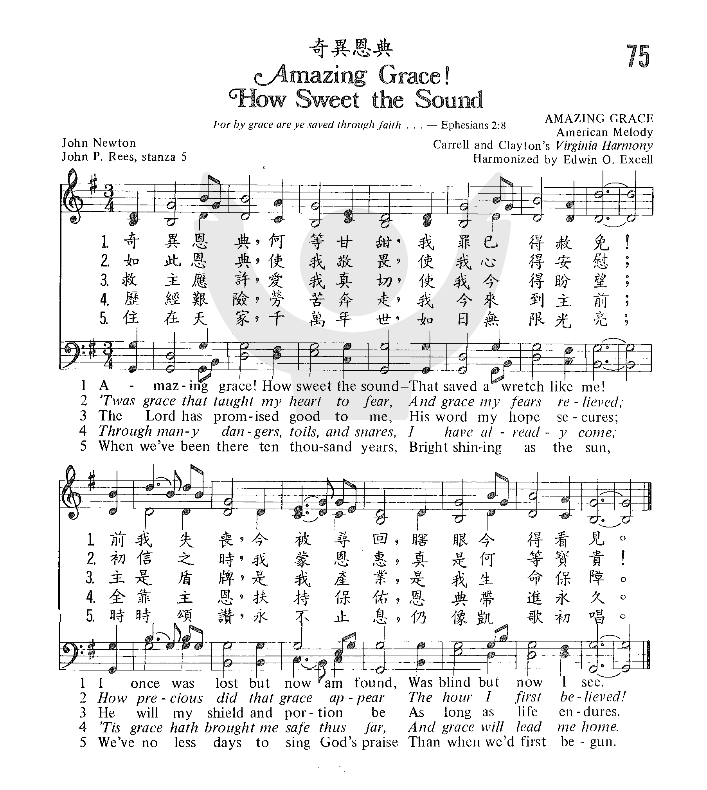
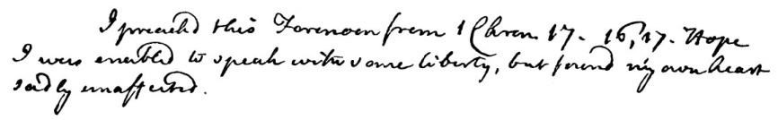
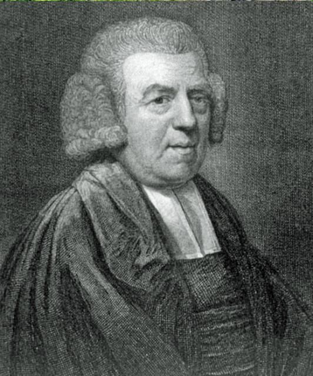

This hymn is Newton's spiritual
autobiography, but the truth it affirms—that we are saved by grace
alone—is one that all Christians may confess with joy and gratitude. As was his custom, the author wrote
this hymn to accompany his sermon on 1 Chronicles 17:16–17, preached on
January 1, 1773; he called it “Faith’s Review and Expectation.”
Much of
its current popularity comes from this now-familiar tune, an association
that began in 1835.Typical of the Appalachian tunes
from the southern United States, NEW BRITAIN is pentatonic with melodic
figures that outline triads. It can be sung unaccompanied in a two- or
even four-part canon, with groups entering after one or two measures.
Sing stanzas 1 and 5 in unison and stanzas 2 and 3 in harmony, and to
illustrate the text, try stanza 4 in canon. Use light accompaniment, but
consider singing stanza 3 unaccompanied.
1 Amazing grace (how sweet the sound)
that saved a wretch like me!
I once was lost, but now am found,
was blind, but now I see.
2 'Twas grace that taught my heart to fear,
and grace my fears relieved;
how precious did that grace appear
the hour I first believed!
3 Through many dangers, toils and snares
I have already come:
'tis grace has brought me safe thus far,
and grace will lead me home.
4 The Lord has promised good to me,
his word my hope secures;
he will my shield and portion be
as long as life endures.
5 Yes, when this flesh and heart shall fail,
and mortal life shall cease:
I shall possess, within the veil,
a life of joy and peace.
6 The earth shall soon dissolve like snow,
the sun forbear to shine;
but God, who called me here below,
will be forever mine.
Ancient & Modern, 2013
奇異恩典，何等甘甜，我罪已得赦免；
前我失喪，今被尋回，瞎眼今得看見。
浩大恩典，使我敬畏，使我心得安慰；
初信之時即蒙恩惠，真是何等寶貴。
經過許多危險網羅，飽受人間苦楚，
此恩領我平安渡過，他日歸回天府。
將來在天安居萬年，恩光如日普照，
好像最初蒙恩景況，讚美永不減少
【奇異恩典】[粵語]
詩集：世紀頌讚，299 譜同：頌主新歌242首
奇異恩典，何等甘甜，我罪已得赦免；
前我失喪，今被尋回，瞎眼今得看見。
如此恩典，使我敬畏，使我心得安慰；
初信之時，即蒙恩惠，真是何等寶貴！
許多危險，試煉、網羅，我已安然經過；
靠主恩典，安全不怕，更引導我歸家。
將來禧年，聖徒歡聚，恩光愛誼千年，
喜樂頌讚，在父座前，深望那日快現。

https://youtu.be/0LjEfJ8xJ1A
A brief introduction to John Newton and William Cowper, whose friendship and
collaboration produced the beautiful "Olney Hymns", along with a sampling of
the hymns from the collection.
https://www.youtube.com/watch?v=skqh_x9wsr0 Yo-Yo Ma "Amazing Grace /
Goin' Home"
Our good friend Yo-Yo Ma returns to the show with a special medley of
"Amazing Grace" and "Goin' Home," sprinkled with a dash of a Yo-Yo Ma
essential, "Simple Gifts."
https://youtu.be/vWZwuK8D4Js
Yo-Yo Ma Amazing Grace Presidential Inauguration 2021
for the Biden/ Harris Inaugural Concert
本詩的曲調引用美國古調改編而成。 約翰牛頓與顧柏（William Cowper）合編了一本聖詩集，其中他寫了二百八十首。他詩歌的特色是簡單、清楚、誠懇。
其他我們所熟悉的聖詩如
「郇城歌」（Glorious Things of Thee Are Spoken），
「甜美聖名」（How Sweet the Name of Jesus Sounds），都是他的作品。
「奇异恩典」的作者 John Newton 1725
年生于伦敦。其母亲是一位敬虔的妇女，当他未满七岁，母亲即去世。父亲再娶，他无心念书，便于十二岁那年，随着父亲过着航海生活。虽足迹遍各处，道德日益堕落，恶名昭彰。他很快地便染上了水手们放荡的生活。吃喝嫖赌无所不为；奸诈狡猾、无所不会。干着不道德的职业，在西非海岸贩卖黑奴予访客、贸易商。后来当了船长，拥有自己船只运送黑奴至西印度及美洲出售。
1748 年 3 月 10 日在一次从非洲返英国的航程中遭遇强烈暴风雨，当他感觉无望几乎要丧失一切时，John Newton
开始读「效法基督」一书，圣灵动工，使他接受了基督。后来蒙召献身传道，成了十八世纪有名的牧师。临终前，大声宣告说：「我的记忆几乎丧失，但我仍记得两件事：我是一个大罪人，而主耶稣是一位伟大的救主！」
「奇异恩典」这首诗乃叙述他重生的经历以及他传讲信息的主题。1807 年去世前，他为自己写了一座墓铭：「John Newton
牧师，从前是位犯罪作恶不信神的人，曾在非洲作奴隶之仆，但借着救主耶稣基督的丰盛怜悯，得蒙保守，复原并赦免，指派宣传福音的事工。」
If America had a national folk hymn, this would probably be it. This well-loved
and oft-sung hymn, written by John Newton in the late eighteenth century, is a
powerful assurance and declaration of the grace of God working in all our lives.
When Newton was just eleven, he joined his father at sea and began a tumultuous
life in the Navy, eventually becoming captain of a slave ship. In a period of
four years, however, his life was drastically turned around: he nearly drowned,
he married a very pious Mary Catlett, and he read through Thomas à Kempis’ Imitation
of Christ.
In 1754 he gave up the slave trade and joined forces with the great
abolitionist, William Wilberforce. A number of years later, he was ordained for
ministry, and soon after wrote this great text, declaring that we are saved only
the grace of God. Newton wrote, “I can see no reason why the Lord singled me out
for mercy…unless it was to show, by one astonishing instance, that with him
'nothing is impossible'” (Newton, The
Life of John Newton).
As we sing the very familiar words of this hymn, how powerful it is to think of
ourselves as an “astonishing instance” of God’s grace and mercy.
Text:
Newton was ordained for ministry in the Church of England in the early 1760s,
and in 1779, collaborated with William Cowper to publish the Olney Hymns,
one of whch was the now famous "Amazing Grace." Originally titled “Faith’s
Review and Expectations,” Newton’s hymn included six stanzas. Most hymnals today
use the first four stanzas from Newton’s text, as well as a fifth anonymous
stanza first found in A Collection of Sacred Ballads (1790), and sung
along with Newton’s text ever since. The original text has not been much
altered, though some additions have been made – Chris Tomlin’s added refrain,
for example: “My chains are gone, I’ve been set free - my God my Savior has
ransomed me. And like a flood, his mercy reigns; unending love, amazing grace.”
Tune:
The Appalachian tune NEW BRITAIN first appeared in Southern Harmony; in a
later edition, it was also evidently set to Newton’s text for the first time.
The modern harmonization is credited to Edwin Othello Excell, who is also
credited with first attaching the final stanza in his 1910 Coronation Hymns.
One of, if not the most popular hymn in the United States, this hymn has been
performed by countless artists and arranged to many different styles. Because of
its simple folk melody, it can be sung as a round, and it also works well to
sing at least one verse a cappella.
Notes
NEW BRITAIN (also
known as AMAZING GRACE) was originally a folk tune, probably sung slowly
with grace notes and melodic embellishments. Typical of the Appalachian
tunes from the southern United States, NEW BRITAIN is pentatonic with
melodic figures that outline triads. It was first published as a hymn
tune in shape notes in Columbian Harmony (1829) to the text
"Arise, my soul, my joyful pow'rs." It was first set to "Amazing Grace"
in William Walker's (PHH
44) Southern Harmony (1835) (see facsimile at p. 85).
The setting is from
Edwin O. Excell's Make His Praise Glorious (1900). Excell
(b. Stark County, OH, 1851; d. Louisville, KY, 1921) grew up in a German
Reformed parsonage and worked as a bricklayer as a young man. In 1871 he
became a singing school teacher. Soon after, while leading the music and
singing solos in a Methodist revival, he experienced a conversion.
Excell joined evangelist Sam P. Jones as a song leader, and the two
traveled the United States as an evangelistic team. An important figure
in the Sunday school movement, Excell wrote over two thousand gospel
songs and edited ninety songbooks. He became a very successful publisher
of hymn books in Chicago; his company, the Biglow-Main-Excell Company,
eventually merged with Hope Publishing Company.
Since NEW BRITAIN is
pentatonic, it can be sung unaccompanied in a two- or even four-part
canon, with groups entering after one or two measures. Sing stanzas 1
and 5 in unison and stanzas 2 and 3 in harmony, and to illustrate the
text, try stanza 4 in canon. Use light accompaniment, but consider
singing stanza 3 unaccompanied.
Some recordings of
"Amazing Grace" by recent pop singers have cast a sentimental shadow
over this hymn, presumably because those performers do not understand
the experience of salvation that so amazed Newton. Christians should
sing this hymn with some vigor and a moderate tempo that supports their
convictions.
--Psalter Hymnal
Handbook
Also see this book:
Turner, Steve. Amazing Grace: The Story of America's Most Beloved
Song. New York: Ecco, 2002.
When/Why/How:
“Amazing Grace” is a powerful hymn of profession of God’s grace and mercy, and
can be sung throughout the liturgical year. It could be sung as a hymn of
response to the assurance of pardon, as a confession of faith, or after a sermon
on salvation or grace. It’s also often sung as a hymn of comfort in times of
distress, and so could work well as a response to lament, or as a hymn of
assurance at funerals.
Some songs that could be paired with this hymn in a worship service are “Grace
Unmeasured” by Sovereign Grace Ministries, “Your Grace Is Enough” by Chris
Tomlin, “When I think about the Lord” by Hillsong United, and so many more songs
that speak about Christ’s redemptive work in us.
Faith’s Review and Expectation
John Newton, 1779
Addressed to anyone
Amazing grace!—how sweet the sound—
that saved a wretch like me!
Rom. 7:24
I once was lost, but now am found,
Luke 15:6, 9, 24, 32
was blind, but now I see.
Is. 29:18; Matt. 11:5; John 9:25
’Twas grace that taught my heart to fear,
Deut. 4:10; Ps. 34:11; Jer. 32:40; Matt. 3:7
and grace my fears relieved;
Gen. 15:1; Ex. 14:13; Is. 43:1; Jer. 30:10
how precious did that grace appear
Acts 8:35–39
the hour I first believed!
Thro’ many dangers, toils, and snares,
Ps. 91:3
I have already come;
’tis grace has brought me safe thus far,
1 Chr. 17:16
and grace will lead me home.
1 Chr. 17:17
The Lord has promised good to me,
Num. 10:29
his Word my hope secures;
Ps. 93:5; Titus 1:2
he will my shield and portion be,
Ps. 18:30; Ps. 73:26
as long as life endures.
And when this flesh and heart shall fail,
and mortal life shall cease,
I shall possess within the veil
Heb. 10:19
a life of joy and peace.
Ps. 16:11; Rom. 8:6
[When we’ve been there ten thousand years,
The earth shall soon dissolve like snow,
bright shining as the sun,
the
sun forbear to shine;
we’ve no less days to sing God’s praise
but God, who call’d me here below,
than when we’ve first begun.]
will
be for ever mine.
“The saying is trustworthy and deserving of full acceptance, that Christ
Jesus came into the world to save sinners, of whom I am the foremost. But I
received mercy for this reason, that in me, as the foremost, Jesus Christ
might display his perfect patience as an example to those who were to
believe in him for eternal life” (1 Tim. 1:15-16).
The Apostle Paul understood how to write edifying autobiography. The focus
of hisautobiographical texts(1
Corinthians 15:8-10, the whole of 2 Corinthians, Galatians 1, etc.) is
really always God, not Paul. He understood that the object of Christian
faith is infinitely more interesting than the faith itself. Jonah understood
this, too. So did Augustine. And so, probably, did the saint who gave his
personal testimony at last week’s prayer meeting. There is a kind of
Christian witness whom we love to hear because he presents us with yet more
direct evidence of who God is: a sovereign and loving savior.
The hymn in front of us was written for aNew-Year’s service,
an occasion when worshippers traditionally reflect on whence they have come
and whither they are going. The genius of the hymn is that its theme is
really not the Christian’s life but rather grace: several concrete and
related ways in which God’s generosity, at every turn, transforms the
Christian’s life into something meaningful. “Amazing Grace!” affords us the
opportunity to testify publicly to the divine grace that alone has delivered
us, sustains us even now, and assures us of eternal life—using the psalmodic
format of a catalog of the Lord’s wondrous deeds past, present, and future.
Like an honest church member moved to speak up at meeting, the hymn begins
vehemently, even impulsively, with an exclamation and an interjection:
“Amazing Grace! (how sweet the sound) that . . .” In the unpretentious
humility of a self-professed wretch, it employs only monosyllabic words for
thenext stanza and a half. Grace is what amazes, not
the speaker. We can almost taste the sweetness of God’s gifts as the
alliterative S’s cause the tongue to tingle (coming after theZ
in amazing: sweet, sound, saved, see). The one who is lost cannot merely
return home. He must be found;
that is, someone else must find him, and that is grace. The one who is blind
cannot simply decide he is going to see now. Sight must be given to
him. It turns out (stanza 2,see Eph. 2:8) that belief
itself is a gift. Those who do not fear the Lord cannot on their own
generate fear of the things that ought to be feared; they must be taught by
the Spirit (1 Cor. 2:14). Ironically, the first two lines of stanza 2 circle
back on themselves, for the relief of learning that Christ has already borne
the penalty so that we don’t have to is precisely what frees us otherwise
self-righteous sinners to fear God in the first place. Amazing.
As the sinner’s justification is accomplished by God’s free grace, so, too,
is his sanctification. It was God who brought the justified sinner through
the wilderness to the place where he now sings. God will continue to lead
him all the way home to Canaan, and, with this, the hymn pivots from past to
future at its exact midpoint, the end of stanza 3. Not only will any
protection, contentment, joy, or peace that the Christian enjoys in the
future be gifts from God, so, too, is the promise that he will enjoy
them. Since the one who promises never lies, the Christian can live by hope.
Hope, it turns out, is also amazing grace. In Newton’s original scheme, the
poem looks swiftly through the rest of one’s life(stanza
4), to one’s death (stanza 5),and to the very end of the
world (stanza 6, reproduced above in italics). But Newton’s gorgeous sixth
stanza has for a long time now been universally displaced by an anonymous
and somewhat random (abrupt shift in theme from grace to praise), jarring
(shift in voice from first-person singular to first-person plural),
ungrammatical (the verb tenses are incorrect, and “less” cannot modify a
plural noun), and ambiguous (where is there? what is shining?) quatrain. But
the substitution is not a total loss, for perpetual praise is a fetching
idea, and our participation in it will be a gift.
The rugged contours and equally rugged embellishments of the tune AMAZING
GRACE (or NEW
BRITAINas
it’s sometimes called) match the plainspoken poetry. Music theorists would
call them “pentatonic,” meaning that they contain only five scale-degrees:
do, re, mi, sol, and la—but neither fa nor ti. It’s a melodic structure
common in folk songs worldwide but uncommon in European art-music. Fa and ti
do not appear in “Camptown Races,” “Ezekiel Saw the Wheel,” or “Old Dan
Tucker.”
Thetune illustrates the word “amazing”by
means of the most forceful gesture in Western music: a fifth scale-degree
(sol) rising to a first scale-degree (do) on the downbeat,
which contrasts vividly with the descending steps of “how sweet the sound.”
The harmony in Edwin O. Excell’s classic arrangement (1910), used in many
hymnals, reinforces the sense of these melodic gestures. Not only does the
soprano leap up to the second syllable of “amazing,” as dictated by the
tune, but the tenor leaps down, so we swing from a chord in which the top
three voices are spaced as closely together as possible to one in which
they’re spaced apart, to produce the fullest sound on the accented syllable.
(Other hymnals achieve this effect by assigning the first syllable to a
unison, then moving to a chord for “-maz-.“) The first five notes of the
tune (amazing grace) are harmonized by one chord in various voicings, but
the next four notes (how sweet the sound) each have a different chord, and
the resulting increase in harmonic richness works like onomatopoeia.
Especially colorful is the E minor chord (labeled below with the Roman
numeral vi) on “sweet”; now the bottom three
voices are spaced closely—indeed, the alto is closer to the bass than it is
to the soprano—to thicken the sound of the chord.
Line 2 of the poem (that saved a wretch like me) has exactly thesame
music as line 1 until the word “me.”Here it leaps up to
high D (sol), the peak tone of the melody, and holds it for five beats to
underscore Newton’s exclamation point. Incidentally, it works nicely in
stanza 6, too, for “bright shining as the sun.” Line 3 provides some melodic
contrast, being unlike the melody of lines 1 and 2, even as it does conclude
like them, on D (sol), to establish a structural parallelism. Only line 4
ends on G (the first scale-degree, or home pitch); this withholding of a
perfect cadence until
the very end pictures the sense of “and grace will lead me home” in
stanza 3.
To appreciate how well Excell’s harmonization prepares us for this final
cadence, we must first back up and consider a melodic quirk of the tune. Of
the thirty-five melodic notes in AMAZING GRACE, twenty-nine fall on the
pitches G, B, and D (do, mi, and sol)—the pitches of the home, or “tonic,”
chord (labelled above with the Roman numeral I). Only six notes of the
melody are foreign to the tonic chord (falling on the pitches A and E). If
we analyze the melody in four phrases, corresponding to the four lines of
the stanza, we’ll notice that each of these six notes from outside the tonic
chord occurs somewhere in the second halves of these phrases. Thus the
melody itself implies an alternation between simple, tonic harmony in the
first half of each melodic phrase or poetic line and something else in the
second half of each (and we’ve noted above how neatly this fits the
contrasting utterances of the poem’s opening).
In Excell’s arrangement, the first halves of lines 1–3 (“Amazing grace,”
“that saved a wretch,” and “I once was lost”) all share the same, unmoving
tonic-harmony. The E minor chord in the first half of line 4, then, is
without precedent and thereby alerts us to the possibility that line 4 might
end in a different way, which it does. (Arrangements like those in
Episcopalian and Lutheran hymnals that attempt to spice up the harmony with
a vi chord at the beginning of line 2 paradoxically make the tune a bit
tedious. We miss Excell’s harmonic differentiation between the first and
second halves of the tune. There is no longer anything distinctive about the
beginning of line 4, so it cannot cue the final cadence.
If a congregation sings six stanzas, it may feel like it has done the
same thing twelve times.)
John Newton “Amazing Grace” by John Newton The United Methodist Hymnal, 378 Faith’s Review and Expectation.—I Chron. xvii. 16, 17.
Amazing grace! (how sweet the sound!) That saved a wretch like me! I once was lost, but now am found; Was blind, but now I see.
“Amazing Grace” resides in a sphere of public awareness that few hymns
can claim. Some think it is a folk song. Many would be surprised to find that it
is an eighteenth-century hymn. Hymnary.org lists more than 1,200 hymnals in
which the hymn appears. By comparison, Joseph Mohr’s (1792-1848) “Silent Night”
appears in 536 hymnals. Its rivals for use in hymnals include “Holy, Holy, Holy”
by Reginald Heber (1783-1826), found in more 1,400 hymnals, and Charles Wesley’s
(1707-1788) “O for a Thousand Tongues to Sing” found in more than 1,500 hymnals.
The difference is that Heber’s and Wesley’s hymns, though popular, would not be
known and sung so broadly and in so many musical styles beyond Christian worship
as Newton’s hymn has been. For example, few hymns have made the Top 10 Hits
list, as “Amazing Grace” did in 1971 when Judy Collins recorded it in a somber
hymn-like style as the theme song on her album by the same name (see
https://www.youtube.com/watch?v=jAfOdXbFir0). The Bill Moyers PBS production on
Amazing Grace (1990) explored many dimensions of the hymn and its imprint on
culture at large.
Newton biographer Steve Turner notes in his book Amazing Grace: The Story
of America’s Most Beloved Hymn (2001):
I was well into the writing stage on September 11, 2001, after which
“Amazing Grace” became the song that people turned to most often to express
their faith, hope, and solidarity. One of the most poignant images of the shock
and grief was that of people of all ages joining hands or linking arms and
softly singing the words . . . The song was used at church services, memorial
gatherings, tribute concerts, and funerals. It was played on Manhattan’s
Fourteenth Street by a Salvation Army ensemble as volunteers loaded trucks and
supplies for helpers at Ground Zero. Pipers from the NYPD piped it at the
commencement of the Prayer for America service held at Yankee Stadium. Red Cross
workers sang it at the site at Shakesville, Pennsylvania, where United Airlines
Flight 93 had plunged into a field after its hijackers were apparently
overwhelmed by courageous passengers (Turner, xxvii).
With no desire to demystify this icon of faith, hope, and comfort, and
with more than a bit of anxiety concerning what I may be able to contribute to
the discussion of a hymn that, at least in part, is better known in the English
language around the world than perhaps any other, let us look a bit deeper.
The Original Publication The first stanza of “Amazing Grace” is cited above as it appears in Olney
Hymns (1779), a significant eighteenth-century collection in three books with
348 total hymns authored by John Newton (1725-1807), Anglican vicar and former
trader of enslaved Africans, and the prominent poet William Cowper (1731-1800).
Book I, “On select Texts of Scripture,” has 141 hymns based on 36 biblical books
from Genesis through Revelation, revealing a systematic approach to Newton’s
preaching. Book II, “On occasional Subjects,” has 100 hymns with sections on
Seasons, Ordinances, Providences, and Creation. Book III, “On the Progress and
Changes of the Spiritual Life,” consists of 107 hymns divided into topics on
Solemn Addresses to Sinners, Seeking, Pleading, Hoping, Conflict, Comfort,
Dedication and Surrender, Caution, Praise, and Short Hymns. Sixty-seven hymns by
Cowper (pronounced “Cooper”) are indicated by a “C,” with the remaining hymns by
Newton. “Amazing Grace” is found in Book I, No. 41, under the title of “Faith’s
Review and Expectation.” A facsimile of the collection may be found at
https://archive.org/details/olneyhymnsinth00newt, with “Amazing Grace” on page
101.
The passage from I Chronicles 17:16-17 was Newton’s text for New Year’s
Day on January 1, 1773: “And David the king came and sat before the Lord, and
said, Who am I, O Lord God, and what is mine house, that thou hast brought me
hitherto? And yet this was a small thing in thine eyes, O God; for thou hast
also spoken of thy servant's house for a great while to come, and hast regarded
me according to the estate of a man of high degree, O Lord God” (KJV). Notes
transcribed from Newton’s manuscript, including a few remnants in Newton’s own
hand, may be found at
https://www.johnnewton.org/Groups/231011/The_John_Newton/new_menus/Amazing_Grace/sermon_notes/sermon_notes.aspx.
A Closer Look at Stanza 1: “Amazing Grace” Versus “Wretch Like Me” A quick look at Newton’s sermon notes in the link above sheds light on
the first stanza of the hymn. Part I of the sermon is titled, “Who am I”? The
brief subsections of this part are subtitled: 1.1 “Miserable”: “After a few
years spent in vanity, we must have sunk no more.” 1.2 “Rebellious”: “Instead of
desiring the Lord’s help, we breathed a spirit of defiance against him . . .
when he knocked at the door of our hearts [we] endeavoured to shut him out till
he overcame us by the power of his grace.” 1.3 “[Undeserving]” (this category
labeled by an editor): “What just cause of admiration, that he should appoint
such salvation, in such a way, in favour of such helpless, worthless creatures.”
This provides the subtext of the first two lines, with the key words
being “grace” and “wretch”—the antithesis or stark contrast between these two
words is even clearer after reading Newton’s sermon notes. Newton used the term
“wretch” repeatedly in his hymns. One scholar notes that the term “wretch”
appears at least 10 other times in the Olney Hymns, “and in each one it is used
to describe the human condition before the operation of the grace of God in
Christ; it is part of the theological vocabulary of his hymns” (Glover, Vol. 3B,
1237),
The Wesleyan tradition emphasizes “grace” and develops this
characteristic of God in distinct ways. (See
http://www.umc.org/what-we-believe/our-wesleyan-heritage.) John Wesley notes in
his sermon preached at St. Mary’s Church, Oxford University, June 18, 1738: “All
the blessings which God hath bestowed upon man are of his mere grace, bounty, or
favour; his free, undeserved favour; favour altogether undeserved; man having no
claim to the least of his mercies.” (See
http://www.umcmission.org/Find-Resources/John-Wesley-Sermons/Sermon-1-Salvation-by-Faith.)
Calvin’s theology, however, was more influential on Newton. Though there
are certainly similarities, the Calvinist doctrine of the “total depravity of
man” and “irresistible grace” may clarify the choice of the term “wretch” in the
first stanza. Indeed, Calvin and Wesley seem to start at similar places. Said
Calvin, “God must first approach [a person] by his Spirit.” Wesley would
probably not argue with this at face value. However, the second part of the
sentence is where the two part company. Calvin continues: “and hence it follows
that all are not drawn, but that God bestows this grace on those whom he has
elected.” (Calvin’s commentary on John 6:41-45,
http://www.ccel.org/ccel/calvin/calcom34.xii.vii.html.)
For some who sing the first stanza today, the word “wretch” sticks in the
throat, at least just a little. Overwhelmingly, hymnal editors have retained the
word “wretch,” even though there has been a temptation to change it. For
example, The Hymnal of The Evangelical United Brethren Church (1957)
substitutes, “That saveth men like me!” (No. 231). Voices United: The Hymn and
Worship Book of The United Church of Canada (1996) adds an asterisk at the
second line with a note that one might sing “that saved and strengthened me!”
(No. 266). The Metropolitan Community Church places this hymn in a prominent
position on its website with the modification, “That saved a soul like me.” (See
http://mccchurch.org/amazing-grace-how-sweet-the-sound-that-saved-a-soul-like-me/.)
Another modification sung extemporaneously is “that saved and set me free.” All
these may have merit when coming from the theological perspective of specific
cultural contexts or communities of faith. It is interesting to note that the
“memory banks” of the general public are so strong, however, that almost all
Christian hymnals include the hymn, and very few hymnal editors dare to modify
the original Calvinist language. As one commentary noted:
. . . It is to the credit of modern hymnal editors, who have not flinched
to revise and rewrite other hymns, that they have left this “wretch” alone. When
one understands something of the degrading way of life that this man led as a
sea captain involved in the slave trade, and recognizes that the hymn is to some
degree autobiographical, it becomes clear that there were few other terms
available to him to describe his condition “before grace.” It might be objected
that this is just the point: how can modern worshipers sing about an experience
they have never shared? That would be a valid argument if Newton were being only
autobiographical. But the subtley [sic] of his poetic genius was such that he
used his own particular experience to enshrine the universal truth of the
meaning of salvation (Glover, 1237).
The opening stanza, so ingrained in the minds of people around the world,
draws strength from the powerful antithesis of concepts: “grace” versus
“wretch”; “lost” versus “found”; “blind” versus “see.” The addition of “amazing”
as a modifier of “grace” further strengthens the antithesis between the two
ideas. Newton wants to stress the contrast so much that he employs tautology—a
linguistic redundancy or, saying the same idea in several ways for emphasis.
Indeed, the use of tautology is one of the features at the heart of the
effectiveness of this stanza. The parenthetical statement that follows “Amazing
Grace!” adds a sense of sublimity to the first two words: “(how sweet the
sound!)”. Furthermore, Newton employs an onomatopoetic technique where the words
sound like their meaning. Note the aural contrast in the resonance between the
smoother alliterative “sweet . . . sound” and staccato “wretch”—a six letter
word with one vowel. Even the sounds set up the contrast between the theological
ideas.
The scriptural undergirding of stanza one is remarkable. The concept of
“grace” echoes beautifully Ephesians 2:8-9: “For by grace are ye saved through
faith; and that not of yourselves: it is the gift of God: Not of works, lest any
man should boast” (KJV). Luke 15 is replete with narratives that support the
“lost/found” opposition in stanza one of the hymn: the parable of the lost sheep
(Matthew 18:12-14; Luke 15:3-7); the parable of the lost coin (Luke 15:8-10),
and, of course, the most famous of all, the return of the prodigal son (Luke
15:11-32). Likewise, the contrast between “blind/see” is a strong theme in the
New Testament. In Luke 24:31: “He has sent me to [bring] recovery of sight to
the blind.” The touch of Jesus brings sight in several narratives: Matthew
9:29-30; Mark 8:22-26; Mark 10:46-52; John 9:1-41.
Conclusion of Part 1 This iconic and universally sung hymn bears a much closer look than most
others. “Amazing Grace”: Part II will explore the remaining stanzas, the tune
most associated with the text, the possible autobiographical connections with
Newton’s life, and the standing of the hymn in the current cultural context in
the United States.
“Amazing Grace”
by John Newton
The United Methodist Hymnal, 378
Faith’s Review and Expectation.—I Chron. xvii. 16, 17.
Amazing grace! (how sweet the sound!)
That saved a wretch like me!
I once was lost, but now am found;
Was blind, but now I see.
“Amazing Grace” resides in a sphere of public awareness that few hymns can
claim. Some think it is a folk song. Many would be surprised to find that it
is an eighteenth-century hymn. Hymnary.org lists
more than 1,200 hymnals in which the hymn appears. By comparison, Joseph
Mohr’s (1792-1848) “Silent Night” appears in 536 hymnals. Its rivals for use
in hymnals include “Holy, Holy, Holy” by Reginald Heber (1783-1826), found
in more 1,400 hymnals, and Charles Wesley’s (1707-1788) “O for a Thousand
Tongues to Sing” found in more than 1,500 hymnals. The difference is that
Heber’s and Wesley’s hymns, though popular, would not be known and sung so
broadly and in so many musical styles beyond Christian worship as Newton’s
hymn has been. For example, few hymns have made the Top 10 Hits list, as
“Amazing Grace” did in 1971 when Judy Collins recorded it in a somber
hymn-like style as the theme song on her album by the same name (see https://www.youtube.com/watch?v=jAfOdXbFir0).
The Bill Moyers PBS production on Amazing Grace (1990) explored many
dimensions of the hymn and its imprint on culture at large.
Newton biographer Steve Turner notes in his book Amazing
Grace: The Story of America’s Most Beloved Hymn (2001):
I was well into the writing stage on September 11, 2001, after which
“Amazing Grace” became the song that people turned to most often to express
their faith, hope, and solidarity. One of the most poignant images of the
shock and grief was that of people of all ages joining hands or linking arms
and softly singing the words . . . The song was used at church services,
memorial gatherings, tribute concerts, and funerals. It was played on
Manhattan’s Fourteenth Street by a Salvation Army ensemble as volunteers
loaded trucks and supplies for helpers at Ground Zero. Pipers from the NYPD
piped it at the commencement of the Prayer for America service held at
Yankee Stadium. Red Cross workers sang it at the site at Shakesville,
Pennsylvania, where United Airlines Flight 93 had plunged into a field after
its hijackers were apparently overwhelmed by courageous passengers (Turner,
xxvii).
With no desire to demystify this icon of faith, hope, and comfort, and with
more than a bit of anxiety concerning what I may be able to contribute to
the discussion of a hymn that, at least in part, is better known in the
English language around the world than perhaps any other, let us look a bit
deeper.
The Original Publication
The first stanza of “Amazing Grace” is cited above as it appears in Olney
Hymns (1779), a significant eighteenth-century collection in three
books with 348 total hymns authored by John Newton (1725-1807), Anglican
vicar and former trader of enslaved Africans, and the prominent poet William
Cowper (1731-1800). Book I, “On select Texts of Scripture,” has 141 hymns
based on 36 biblical books from Genesis through Revelation, revealing a
systematic approach to Newton’s preaching. Book II, “On occasional
Subjects,” has 100 hymns with sections on Seasons, Ordinances, Providences,
and Creation. Book III, “On the Progress and Changes of the Spiritual Life,”
consists of 107 hymns divided into topics on Solemn Addresses to Sinners,
Seeking, Pleading, Hoping, Conflict, Comfort, Dedication and Surrender,
Caution, Praise, and Short Hymns. Sixty-seven hymns by Cowper (pronounced
“Cooper”) are indicated by a “C,” with the remaining hymns by Newton.
“Amazing Grace” is found in Book I, No. 41, under the title of “Faith’s
Review and Expectation.” A facsimile of the collection may be found at https://archive.org/details/olneyhymnsinth00newt,
with “Amazing Grace” on page 101.
The passage from I Chronicles 17:16-17 was Newton’s text for New Year’s Day
on January 1, 1773: “And David the king came and sat before the Lord, and
said, Who am I, O Lord God, and what is mine house, that thou hast brought
me hitherto? And yet this was a small thing in thine eyes, O God; for thou
hast also spoken of thy servant's house for a great while to come, and hast
regarded me according to the estate of a man of high degree, O Lord God”
(KJV). Notes transcribed from Newton’s manuscript, including a few remnants
in Newton’s own hand, may be found at https://www.johnnewton.org/Groups/231011/The_John_Newton/new_menus/Amazing_Grace/sermon_notes/sermon_notes.aspx.
A Closer Look at Stanza 1: “Amazing Grace” Versus “Wretch Like Me”
A quick look at Newton’s sermon notes in the link above sheds light on the
first stanza of the hymn. Part I of the sermon is titled,“Who
am I”?
The brief subsections of this part are subtitled: 1.1 “Miserable”: “After a
few years spent in vanity, we must have sunk no more.” 1.2 “Rebellious”:
“Instead of desiring the Lord’s help, we breathed a spirit of defiance
against him . . . when he knocked at the door of our hearts [we] endeavoured
to shut him out till he overcame us by the power of his grace.” 1.3
“[Undeserving]” (this category labeled by an editor): “What just cause of
admiration, that he should appoint such salvation, in such a way, in favour
of such helpless, worthless creatures.”
This provides the subtext of the first two lines, with the key words being
“grace” and “wretch”—the antithesis or stark contrast between these two
words is even clearer after reading Newton’s sermon notes. Newton used the
term “wretch” repeatedly in his hymns. One scholar notes that the term
“wretch” appears at least 10 other times in the Olney
Hymns, “and in each one it is used to describe the human condition
before the operation of the grace of God in Christ; it is part of the
theological vocabulary of his hymns” (Glover, Vol. 3B, 1237),
Calvin’s theology, however, was more influential on Newton. Though there are
certainly similarities, the Calvinist doctrine of the “total depravity of
man” and “irresistible grace” may clarify the choice of the term “wretch” in
the first stanza. Indeed, Calvin and Wesley seem to start at similar places.
Said Calvin, “God must first approach [a person] by his Spirit.” Wesley
would probably not argue with this at face value. However, the second part
of the sentence is where the two part company. Calvin continues: “and hence
it follows that all are not drawn, but that God bestows this grace on those
whom he has elected.” (Calvin’s commentary on John 6:41-45, http://www.ccel.org/ccel/calvin/calcom34.xii.vii.html.)
For some who sing the first stanza today, the word “wretch” sticks in the
throat, at least just a little. Overwhelmingly, hymnal editors have retained
the word “wretch,” even though there has been a temptation to change it. For
example, The
Hymnal of The Evangelical United Brethren Church (1957) substitutes,
“That saveth men like me!” (No. 231). Voices
United: The Hymn and Worship Book of The United Church of Canada (1996)
adds an asterisk at the second line with a note that one might sing “that
saved and strengthened me!” (No. 266). The Metropolitan Community Church
places this hymn in a prominent position on its website with the
modification, “That saved a soul like me.” (See http://mccchurch.org/amazing-grace-how-sweet-the-sound-that-saved-a-soul-like-me/.)
Another modification sung extemporaneously is “that saved and set me free.”
All these may have merit when coming from the theological perspective of
specific cultural contexts or communities of faith. It is interesting to
note that the “memory banks” of the general public are so strong, however,
that almost all Christian hymnals include the hymn, and very few hymnal
editors dare to modify the original Calvinist language. As one commentary
noted:
. . . It is to the credit of modern hymnal editors, who have not flinched to
revise and rewrite other hymns, that they have left this “wretch” alone.
When one understands something of the degrading way of life that this man
led as a sea captain involved in the slave trade, and recognizes that the
hymn is to some degree autobiographical, it becomes clear that there were
few other terms available to him to describe his condition “before grace.”
It might be objected that this is just the point: how can modern worshipers
sing about an experience they have never shared? That would be a valid
argument if Newton were being only autobiographical. But the subtley [sic]
of his poetic genius was such that he used his own particular experience to
enshrine the universal truth of the meaning of salvation (Glover, 1237).
The opening stanza,
so ingrained in the minds of people around the world, draws strength from
the powerful antithesis of concepts:
“grace” versus “wretch”;
“lost” versus “found”;
“blind” versus “see.”
The addition of “amazing” as a modifier of “grace” further strengthens the
antithesis between the two ideas. Newton wants to stress the contrast so
much that he employs tautology—a linguistic redundancy or, saying the same
idea in several ways for emphasis. Indeed, the use of tautology is one of
the features at the heart of the effectiveness of this stanza. The
parenthetical statement that follows “Amazing Grace!” adds a sense of
sublimity to the first two words: “(how sweet the sound!)”. Furthermore,
Newton employs an onomatopoetic technique where the words sound like their
meaning. Note the aural contrast in the resonance between thesmoother
alliterative“sweet . . . sound” andstaccato“wretch”—a
six letter word with one vowel. Even the sounds set up the contrast between
the theological ideas.
The scriptural undergirding of stanza one is remarkable. The concept of
“grace” echoes beautifullyEphesians 2:8-9:“For
by grace are ye saved through faith; and that not of yourselves: it is the
gift of God: Not of works, lest any man should boast” (KJV). Luke 15 is
replete with narratives that support the “lost/found”opposition
in stanza oneof the hymn: theparable of
the lost sheep(Matthew 18:12-14; Luke 15:3-7); the parable
of the lost coin (Luke 15:8-10), and, of course, the most famous of all, the
return of the prodigal son (Luke 15:11-32). Likewise, the contrast between
“blind/see” is a strong theme in the New Testament. In Luke 24:31: “He has
sent me to [bring] recovery of sight to the blind.” The touch of Jesus
brings sight in several narratives: Matthew 9:29-30; Mark 8:22-26; Mark
10:46-52; John 9:1-41.
Conclusion of Part 1
This iconic and universally sung hymn bears a much closer look than most
others. “Amazing Grace”: Part II will explore the remaining stanzas, the
tune most associated with the text, the possible autobiographical
connections with Newton’s life, and the standing of the hymn in the current
cultural context in the United States.
A quick reading of stanzas 2-6 as they appear in their original publication,
the Olney
Hymns (1779), may be informative for many readers. Stanzas 2 and 3 appear
in virtually all hymnals, and some include stanza 4. Few hymnals produced in the
United States include stanzas 5 and 6.
1.2 “Rebellious. Blinded by the god of this world. We had not so much a desire
of deliverance. Instead of desiring the Lord's help, we breathed a spirit of
defiance against him. His mercy came to us not only undeserved but undesired.
Yea [a] few [of] us but resisted his calls, and when he knocked at the door of
our hearts endeavoured to shut him out till he overcame us by the power of his
grace.”
Stanzas 3 and 4relate closely to part 2 of the sermon of
the day, “That thou hast brought me hitherto”.
A particular sentence in the Scripture of the day is relevant here: “Who am I, O
Lord God, and what is mine house, that thou hast brought me hitherto?”(I
Chronicles 17:16)Newton’s brief notes on this section follow:
“Here let us look back: 2.1 Before conversion His providential care preserving
us from a thousand seen, millions of unseen dangers, when we knew him not. His
secret guidance, leading us by a way which we knew not, till his time of love
came.”
While it may be overreaching to ascribe too much direct autobiographical
influence in this hymn, one can well imagine that Newton may have inserted an
example from his days as a seafaring captain with a cargo of enslaved Africans
weathering stormy seas that threatened the lives of all on board. Indeed, it is
likely that Africans were lost on every middle passage voyage from their
homeland to the New World. By the mid-1740s, Newton was reading the influential
devotional book, The
Imitation of Christ (ca. 1418-1427) by German Catholic monk Thomas à Kempis
(c. 1380-1471), a turning point in Newton’s spiritual life. For a brief overview
of Newton’s life and a description of a particular storm in 1747, see http://www.christianitytoday.com/history/people/pastorsandpreachers/john-newton.html.
The first three stanzas cite theword “grace” six times.
Stanza 4,“The Lord has promised good to me,” rounds out thetwo
stanzasaddressing art 2 of the sermon outline: 2:3 “Mercy and
goodness have followed us. In temporals, he has led and fed us.”
The original stanzas 5 and 6are the least known and rarely
appear in current hymnals in the USA. The
United Methodist Hymnal (1989) is unusual in that it includes five of the
original six stanzas virtually intact. These last two stanzas parallel part 3 of
the sermon: “You have spoken about the future.”
Perhaps, most surprising, is the awareness of the oft-printed final stanza in
hymnals in the United States, which was not part of the original hymn:
When we’ve been there ten thousand years,
Bright shining as the sun,
We’ve no less days to sing God’s praise
Than when we’ve first begun.
Rarely, if ever, used in English language hymnals outside the United States,
this stanza was located in A
Collection of Sacred Ballads (1790), where it was appended to “Jerusalem,
My Happy Home” (Anon., c. 1580). American gospel song composer, E. O. Excell
(1851-1921) is credited withattaching this stanzato
the end of Newton’s “Amazing Grace” in his Coronation
Hymns for the Church Sunday School (Chicago, 1910).
A common practice during the nineteenth-century revival collections was to
freely borrow refrains and stanzas from other sources and integrate them into
existing hymns, sometimes known as “wandering” or “floating” stanzas or
refrains. Obviously, stanza 6 of the original hymn covers some of the same
theological territory, that of eschatology or heaven, but it contains a possible
Calvinist interpretation of election in the third line of this stanza — “God,
who called me here below.” Since the revival movement was largely Armenian in
theology or salvation open to all, this may have rendered the originalstanza
6unacceptable. Furthermore, the language of the borrowed
stanza is more direct for American ears, though something is lost by omitting
the compelling images in Newton’s original: “The earth shall soon dissolve like
snow,/The sun forbear to shine.”
Newton leaves us a curious note at the conclusion of his sermon in his own hand:

“I preached this Forenoon from 1 Chron. 17.16.17. Hope I was enabled to speak
with some liberty, but found my own heart sadly unaffected.”
Might it be that, upon reflection, the captain of ships that transported
countless enslaved Africans to a life of servitude and misery was still
wrestling with the miracle of “amazing grace”?
Though it is tempting, even for this writer, to find autobiographical
connections between Newton’s dramatic life story and his most famous hymn, Carl
Daw, Jr. counsels us wisely:
Although modern readers and singers are more likely to look at this hymn for
points of connection with Newton’s own eventful history as a former sailor and
slave trader turned Anglican priest and abolitionist, the author himself
probably thought of what he had written as an outline of the typical journey
from utter despair (1.2, “a wretch like me”) to confident faith (3.4, “grace
will lead me home”).
That assumption of speaking to a general human condition accounts, at least
partly, for the widespread use of this hymn. . .” (Daw, 617).
The Music of “Amazing Grace”
Newton’s text was first paired with a variety of tunes including ARLINGTON,
WARWICK, HEBER, and BELMONT in hundreds of hymnals. The tune that we know first
appeared in two different versions in the Columbian
Harmony (Cincinnati, 1829) edited by Benjamin Shaw and Charles H. Spilman,
with the tune names St. Mary’s and GALLAHER. Later collections picked up the
tune, but paired its frequently used Common Meter (8.6.8.6) structure to other
texts, such as in the Virginia
Harmony (1831) where it was named HARMONY GROVE.
Finally, William (“Singing Billy”) Walker (1809-1875) paired the tune with
Newton’s text in his famous collection Southern
Harmony (New Haven, 1835) under the name NEW BRITAIN. Edwin O. Excell, the
same composer who solidified the use of the alternate final stanza to the hymn,
included the tune under the title AMAZING GRACE in his collection Make
His Praise Glorious (1900). The arrangement of the tune that is found in
many current hymnals first appeared in Coronation
Hymns (1910). The
United Methodist Hymnal uses the harmonization found in the first (1900) of
Excell’s two collections. It was not until the 1960s that AMAZING GRACE (NEW
BRITAIN) was accepted as the primary tune associated with this text beyond the
United States.
“Amazing Grace” in Other Cultural Contexts
The United Methodist Hymnal published anonymous phonetic transcriptions of
a stanza in four Native American languages (Cherokee, Kiowa, Creek, and Choctaw)
that are sung to the tune of AMAZING GRACE. A Navajo text by Albert Tsosie was
added to these. These texts are not translations of Newton’s text, but are
anonymous (except for the Navajo stanza) stanzas on the Second Coming,
reflecting more closely the theme of the anonymous final English-language stanza
appended later to Newton’s text (Young, 207). A similar approach was taken in
the Presbyterian Church (USA) hymnal Glory
to God (2013).
The range of musical styles that incorporate at least a portion of Newton’s text
is truly astounding and perhaps unparalleled in Christian hymnody. The
appearance in William Walker’s Southern
Harmony was a cultural adaptation to the shape-note tradition with a
distinctive sound. Note the African American “Dr. Watts Metered” style
transcribed by Evelyn Simpson-Curenton for the African
American Heritage Hymnal (Chicago: GIA Publications, 2001) https://hymnary.org/hymn/AAHH2001/page/393.
More recently,Chris Tomlin’s (b. 1972) “Amazing Grace (My
Chains Are Gone)”alludes both to the autobiographical context
of slavery and to the universal understanding of the power of salvation through
grace to free us from all forms of bondage, with the addition of the refrain “My
chains are gone.”
The YouTube clip cited intersperses scenes from the British-Nigerian film Amazing
Grace (2006) about the abolition of slavery in the British Empire led by
William Wilberforce (See https://www.youtube.com/watch?v=Y-4NFvI5U9w).
Most recently,President Obama sang,perhaps
spontaneously, “Amazing Grace” at the June 17, 2105, Charleston church shooting,
a mass shooting by a young white supremacist that killed nine African Americans
at the Emanuel African Methodist Episcopal Church. (See https://www.youtube.com/watch?v=IN05jVNBs64.)
Words cannot describe the power of this hymn sung by the first African-American
president in a city where the sale of enslaved Africans was once a common
commercial transaction.
Perhaps the greatest enigma of this hymn is that “Amazing Grace” speaks globally
of the mystery of salvation without mentioning the name of Jesus. Much like
Sydney Carter’s “Lord of the Dance” (1963), an allegory on the life of Christ
that never mentions Jesus, it has a witness well beyond Christian circles. The
universality of this hymn lies in our awareness of the wretchedness of the human
condition and for a hope deeply embedded in humanity at large that we may be
“saved” from that condition by something beyond ourselves — “Amazing Grace.”
FURTHER READING AND REFERENCES
Carl P. Daw, Jr. Glory
to God: A Companion (Louisville: Westminster John Knox Press, 2016),
616-618.
Carlton R. Young, Companion
to The United Methodist Hymnal (Nashville: Abingdon Press, 1993), 206-208.
C. Michael Hawn, D.M.A., F.H.S., is University Distinguished Professor
Emeritus of Church Music and Adjunct
Professor and Director, Doctor of Pastoral Music Program at Perkins School
of Theology at Southern Methodist University.
當然，對於電影的閱讀者而言，所面對的具體挑戰乃是，如何從威伯福斯令人動容的異象旅程，走回到自己生命中含混不明的異象圖像﹖甚至是如何確認自己的異象的內容﹖又如何回應異象的呼召﹖
闡述這個深刻卻無法迴避的信仰主題並不容易，因為牽涉到極為細膩的信仰領受與判斷。然而，我們至少可以在威伯福斯的異象掙扎中，窺見他穿越層層思考迷障的亮光。
在威伯福斯面對國會壓力與廢除黑奴法案遲遲無法通過的挫折時，他向好友也是未來擔任英國首相的威廉庇特表示，想要離開國會議員的角色，轉而擔任全職的傳道人。 沒想到威廉庇特對威伯福斯給出了一個令人印象深刻的挑戰﹕「Do you intend to use your beautiful voice to
praise the Lord or change the
world?」表面上看起來，威廉庇特的挑戰似乎是要威伯福斯在獻身上帝中轉向世俗，刺激他在「讚美上帝」與「改變世界」中做出二擇一的判斷，但事實上我們卻在威伯福斯委身黑奴解放的行動中，見證兩者美好的結合異象＝獻身＋見證恩典
在解放黑奴這條漫長而艱辛的道路中，威伯福斯所依靠的不是任何政治意識型態的堅持，也不是不離不棄的戰友同志，而是不斷在上帝所創造的大自然界中，支取上帝恩典的臨在。
異象，就在如此龐大的政治壓力､身體病痛與對手攻訐的糾結中，逐步實現在威伯福斯徹底世俗的政治鬥爭中。
異象，並非尋求天崩地裂的神聖奇景﹔異象，乃是基督徒將自己的生命徹底委身給上帝，並且見證奇異恩典的地方。因此，異象的發動是上帝的主權，許多美好的信仰價值需要在神聖的延遲中，等候悔改的醞釀，並且異象打破了聖俗二分的割裂思考，讓生命的每一個時刻都成為迎向上帝呼召的旅程。
據此，我們將在重新尋求生命異象的同時，領悟「奇異恩典」的深刻意義。
約翰牛頓John
Newton生於英國倫敦。父親是個老練的船長，對約翰的管家過於嚴苛，以致從小父子關係不和。母親伊利沙白是個虔誠的基督徒，從小教導約翰禱告、讀聖經和背經文，也為到兒子將來奉獻給神而禱告。他們一家在獨立教會聚會，就是形式僵硬化的英國聖公會�堣嬪O出來的。約翰得以聽到「英國聖詩之父」──以撒華滋（Isaac
Watts）所寫許多優美的敬拜聖詩，如《普世歡騰》（Joy to the world）、《我每靜念那十字架》（When I Survey
the Wondrous Cross）。這也潛伏地影響約翰在後來成為聖詩作者。可惜在約翰7歲時，母親因肺結核病去世。當時因約翰的父親出海，所以一年多�堨L被交由親友照顧。後來，父親尋找到約翰，又娶了第二任妻子，約翰就與繼母同住，自此他變得與神疏離。因著父親暴躁的性情，繼母對親生兒女的偏坦，使約翰變得更反叛。然而，約翰是個很有天分的孩子，特別在拉丁文和數學方面也很出色。
Because his conversion to Christianity was so dramatic, and because he was such
a prolific writer, John Newton continues to be our pastor today.
On controversy and religious extremism he wrote, "Of all people who engage in
controversy, we, who are called Calvinists, are most expressly bound by our own
principles to the exercise of gentleness and moderation...
The Scriptural maxim, that "the wrath of man worketh not the righteousness of
God," is verified by daily observation. If our zeal is embittered by expressions
of anger, invective, or scorn, we may think we are doing service to the cause of
truth, when in reality we shall only bring it into discredit."
On the love of God and our response he writes,
Let us love and sing and wonder,
Let us praise the Savior's Name!
He has hushed the law's loud thunder,
He has quenched Mount Sinai's flame.
He has washed us with his blood,
He has brought us nigh to God.
Let us wonder; grace and justice
Join and point to mercy's store;
When through grace in Christ our trust is,
Justice smiles and asks no more:
He who washed us with his blood
Has secured our way to God.
Let us praise, and join the chorus
Of the saints enthroned on high;
Here they trusted Him before us,
Now their praises fill the sky:
"Thou hast washed us with Your blood;
Thou art worthy, Lamb of God!"
Hark! the Name of Jesus, sounded
Loud, from golden harps above!
Lord, we blush, and are confounded,
Faint our praises, cold our love!
Wash our souls and songs with blood,
For by Thee we come to God.
Timeless Two-stanza
Benediction
Finally, John Newton leaves us a two-stanza hymn of Benediction which is as
timely today as it was on the day it was written over two centuries ago.
May the grace of Christ our Savior
And the Father's boundless love
With the Holy Spirit's favor,
Rest upon us from above.
Thus may we abide in union
With each other and the Lord,
And possess, in sweet communion,
Joys which earth cannot afford.
Perhaps, play the hymn tune"Cross
of Jesus"by John Stainer, which appeared in his oratorio,
"The Crucifixion."
Thank you for joining me for this episode of The Hymn of the Week. Tune in again
next week when we will consider another great hymn.
In a Facebook Live video posted on July 13, 2017, worship leader Chris
Tomlin (b. 1972) sits in a patio chair, an acoustic guitar in hand. Behind
him, landscaped boulders mark the elevation lines, while scattered pines and
hardwoods reveal a commanding view of the late afternoon countryside.
Festooned with a baseball cap featuring the state flag of Colorado, a black
T-shirt, and jeans, the native Texan Tomlin exhibits the reflective warmth
associated with his public persona.
After singing a portion of his enormously popular version of “Amazing
Grace/My Chains Are Gone?at half tempo, Tomlin welcomes the viewers to this
“behind the song?story of how he came to write the piece. Amidst muffled
yells and laughter from his off-screen daughters, Tomlin offers a
disclaimer: “I never set out to take the hymn ‘Amazing Grace?and add
something to it—anybody would be crazy to do that! It’s only the greatest
song ever written.?Instead, Tomlin recounts a plane ride whereon he had a
chance encounter with a friend who told him about some acquaintances who
were making a movie about William Wilberforce called Amazing
Grace (2007). His friend mentioned that the producers of the film were
wondering if Tomlin would be willing to “do something?with the hymn of the
same name.
After briefly recounting Wilberforce’s work toward abolishing the slave
trade in Europe, Tomlin explains the life of “Wilberforce’s mentor,?John
Newton (1725-1807), who wrote the hymn “Amazing Grace?(1779) after his
conversion and abandonment of his career as a slave trader. (For further
history see Hawn, 2018, n.p.) While pondering the proposal, Tomlin read
about the history of John Newton and reflected on the depth of the lyrics in
their context of slavery. Out of this reflection, he had an epiphany: “So
these words just started flowing one night—my chains are gone, I’ve been set
free, my God, my savior, has ransomed me? Tomlin breaks off here and
describes the word ransom ?I
was thinking about how you pay a ransom for a slave? he continues reciting
the lyrics:
‘and like a flood, his mercy reigns. Unending love, Amazing Grace.?And so I
wrote that little refrain, and started singing it out to the hymn, never
thinking it was going to do anything!
Tomlin chuckles and puts his hands up defensively as he looks away from the
camera.
I sent it to the guys saying, ‘hey, if you want to use this for the movie,
that’d be great,?never dreaming that churches would adopt this version of
‘Amazing Grace.?So I count it an incredible privilege to be in a long line
of people who’ve sung this song.

John
Newton
Explaining this long line of singers, Tomlin delightedly exclaims that he is
by no means the first person to modify the hymn. In fact, the final—and
arguably most famous—stanza was not even written by Newton, but was added by
“some guy . . . a hundred years after the hymn was originally written.?That
“some guy?who attached the stanza to the hymn was E. O. Excell (1851-1921),
in Coronation
Hymns for Sunday School (1910), although as Hawn and others note, the
original author of this stanza is unknown (Gerkin, 2019, n.p.).
Before concluding his video with a performance of “Amazing Grace/My Chains
Are Gone,?Tomlin again expresses gratitude and awe that his work has the
honor of being associated with “probably the greatest song in the history of
humanity,? and he joyfully recounts the stories people have shared with him
about how the song had impacted them.
As is implied by Tomlin’s gestures and stated justification for his version
of “Amazing Grace,?the addition of his refrain has been met with
considerable criticism.For example, Christian blog roundup
site Patheos featured
a series of posts by Jonathan Aigner criticizing Tomlin (See Aigner, 2017,
n.p.). Even the Christian satire blog “Babylon Bee?got in on the act with
“Federal Judge Orders Chris Tomlin to Stop Adding Choruses to Perfectly Good
Hymns.? (See “Judge Orders,?2017, n.p.) Some of these critiques are well
founded: the revenue generated by copyrighting and distributing a version of
a famous hymn is considerable, and since claiming the work of another for
your own personal gain is generally considered theft, such revenue may be
ethically dubious.
While I take some issue with such practices, and I certainly am skeptical
about Tomlin’s attestations that he had “no idea?his version of “Amazing
Grace?would be so popular (it’s only the “greatest song ever written? it
also closes his album, See
the Morning [2006]), I find the commercial aspect of church music
unavoidable, if I’m being honest. Unless I decide to live to an alternate
1985 (an allusion to Back
to the Future, Pt. II [1989]), I must acknowledge that hymnal compilers
from all centuries have financially benefited from such actions (although
often at the expense of the writers and composers, sadly). It was no
accident that the most popular hymns of today and yesterday were included in
one version or another in nearly every successful hymnal. Are we so naive to
believe that Excell, Walker, et al, received no monetary reward for their
compilations? It seems fair to say that Tomlin is right in asserting that he
is just one in a long line of church musicians who have arranged or amended
“Amazing Grace?or another such hymn for their own use. (Think of Charles
Wesley’s “O for a Thousand Tongues?vs. Ralph Hudson’s “Blessed Be the Name?
and Isaac Watts’s “Come We that Love the Lord?vs. Robert Lowry’s “Marching
to Zion.? Instead of offering yet another critique of such practices—nor
indeed, of offering a spirited defense—I wish to consider an aspect of this
piece’s performance in the contemporary worship idiom favored by Tomlin that
has gone unexamined: the theological metaphors of the musical accompaniment.
It seems fair to say that Tomlin is right in asserting that he is just one
in a long line of church musicians who have arranged or amended “Amazing
Grace? or another such hymn for their own use.
It is well established that Tomlin, like the historical muse for “My Chains
Are Gone,?John Newton, is deeply influenced by Calvinist theology. It is
therefore unsurprising that Tomlin concludes his rendition with Newton’s
original final stanza (cited below), instead of the hopeful and optimistic
celebration of eternal bliss in Excell’s addition found in most hymnals
(which Hawn and Carl P. Daw, Jr. suggest was more befitting the Armenian
tenor of the Second Great Awakening; See Hawn, Part II, n.p.):
The earth shall soon dissolve like snow
The sun forebear to shine
But God who called me here below
Shall be forever mine.
One of the hallmarks of Tomlin’s lyrical offerings has been an unwavering
confidence in the absolute sovereignty of God, a prime Calvinist tenet. As
Joshua K. Busman has noted in his comparative analysis of Tomlin’s version
of “God of this City?versus Irish band Bluetree’s original, Tomlin’s musical
setting eliminates tonicization of the relative minor from the original so
as to inflect confidence in God’s inevitable acts of justice in the world,
rather than on the need for human partnership with God in those acts
(Busman, 2015, 199-214). While both versions are in the key of C Major,
Bluetree tonicized A minor during the verses to convey a sense of dis-ease
so as to impel action. Tomlin eliminates this tonicization, and the effect
of the tune becomes one of unwavering confidence rather than a call to
action. (See Busman, 2015, 208-213 for a complete description of this
analysis.)
This tendency is present in “Amazing Grace/My Chains Are Gone?as well. While
there are no substantial alterations to the harmonic structure of the song
(aside from the usual improvisations and simplifications common to folk or
pop styles of music), the guitar accompaniment features a notable absence
from NEW BRITAIN’s setting. Aside from changing the key from F Major to G
Major (reportedly to sit at the upper end of Tomlin’s register in order to
convey a sense of emotional gravitas), the third of the tonic G chord,
“B,?is noticeably missing. This results in a chordal structure of stacked
fifths—G-x-D-G-D-G (x represents the muted A string). The highest inversion
of the tonic fifth—D-G—is held as a suspension on the B and high E string
throughout the entire song, only resolving the G to an F# for a brief moment
at end of the PAC in the refrain.
The effect of this gesture is one of complete stability. By stacking fifths
and extending the upper interval throughout the song, what dissonance there
is becomes incidental. This stability assures the singer and listener of
God’s unending, irrevocable grace. While there is not space here to explain
this musical/theological metaphor further, I must say that this gestural
device pervades Tomlin’s work, such that it is the most common chord
construction across all of his albums. In fact, I have on more than one
occasion referred to it as “the Tomlin chord.?/p>
This musical apparatus seems to suggest a coherence between Tomlin’s
theological position on matters of history and the musical devices he is
known for. This is understandable. It is profoundly comforting to sing of
grace and the assurance of God’s favor toward us in the context of a
harmonically stable—dare I say conventional and lackluster—musical setting.
This is a good thing. I am, however, concerned by the implications of a
musical setting that treats major thirds as unwanted dissonance: what if
such preference indicates an unwillingness to engage experiences or even
theologies that challenge our notions of certainty? While it is certainly a
stretch to conclude that eliminating the third from “Amazing Grace?is a
theologically thin discourse, I am not convinced that entertaining such a
stretch is unwarranted, given the prevalence of this gesture in Tomlin’s
repertoire and the analyses of his work offered by Monique M. Ingalls (2011,
2018), Busman, and others. To be sure, a musical setting that emphasizes
confidence in God’s sovereignty is immensely fitting to the theme of
“Amazing Grace.?Yet when applied more broadly, I am concerned that this
perception of the world does not match up with lived reality. Moreover, I
suspect that grace itself
does not match up with such a perception.
Joshua Kalin Busman, ?Yet to Come?or ‘Still to Be Done? Evangelical Worship
and the Power of ‘Prophetic?Songs,?nbsp;Congregational
Music-Making and Community in a Mediated Age, ed. Ann Nekola and Tom
Wagner, Congregational Music Studies (Farnham, UK: Ashgate Publishing
Limited, 2015), 199?14.
Monique M. Ingalls, “Singing Heaven Down to Earth: Spiritual Journeys,
Eschatological Sounds, and Community Formation in Evangelical Conference
Worship.?nbsp;Ethnomusicology 55,
no. 2 (2011): 255?79.
Monique M. Ingalls, Singing
the Congregation: How Contemporary Worship Music Forms Evangelical Community.
(Oxford: Oxford University Press, 2018).
“Amazing Grace”(hymnstudiesblog)
“Amazing Grace”
"AMAZING GRACE"
"…Through the grace of the Lord Jesus Christ we shall be saved…" (Acts
15.11)
INTRO.:
A hymn which praises the grace of God through our Lord Jesus Christ is
"Amazing Grace" (#205 in Hymns for Worship Revised, and #257 in Sacred
Selections for the Church). The text, except for the last stanza, was
written by John Newton (1725-1807). Originally in six stanzas, it first
appeared under the title "Faith’s Review and Expectation" in the 1779 Olney
Hymns, Book I, published by Newton and William Cowper (1731-1800). What is
today usually used as the final stanza is not from Newton but is often
attributed to John P. Rees (1828-1900). However, this is almost certainly
unlikely because it appeared as early as 1790 in A Collection of Sacred
Ballads compiled by Richard and Andrew Broaddus as an anonymous final stanza
with the hymn "Jerusalem, My Happy Home." In older books it is sometimes
found with "On Jordan’s Stormy Banks I Stand" by Samuel Stennett
(1727-1795). The tune (called New Britain, Harmony Grove, Symphony, Solon,
Redemption, St. Mary’s, and Gallaher) is an early American melody of unknown
origin. It appears to have begun life as a plantation folk song known as
"Loving Lambs."
The earliest known appearance seems to be in the 1831 Virginia Harmony
compiled by James P. Carrell and David S. Clayton of Lebanon, VA, although
some books give the oldest source as the 1829 Columbian Harmony of Benjamin
Shaw and Charles H. Spillman where it appears in variant forms. It is
sometimes attributed to William Walker, who was born near Cross Keys, SC, on
May 6, 1809, the son of a Welsh immigrant. Receiving only an elementary
education, at the age of eighteen he went with his family to live near
Spartanburg, SC, where he became associated with the Welsh-Baptist Church
and soon thereafter began teaching music. For the rest of his life, "Singin’
Billy" taught singing schools in North and South Carolina, Georgia, and
eastern Tennessee, devoting his life to the collection of southern
Appalachian folk hymns, many of which were of Welsh, Scotch, Irish, and
English origins. At the age of 24, he married Amy Golightly, and they became
the parents of ten children. Together with Benjamin Franklin White, who had
married Amy’s sister Thurza, he prepared a collection of hymns, Southern
Harmony, which was printed at New Haven, SC, in 1835.
White later parted with Walker and published his own collection, the
well-known Sacred Harp, in 1844. Walker’s Southern Harmony was immensely
popular among the southern rural people, and before the Civil War it could
be purchased in general stores. Going through four editions, the last in
1854, it sold 600,000 copies during the first 25 years. Evidently it was in
Walker’s book that this tune was first used with Newton’s words, and its
inclusion gave it widespread usage. Walker died on Sept. 24, 1875. The
transfer of this tune from the old oblong books to the upright collections
may have been the work Rigdon McCoy McIntosh (1836-1899). He arranged a
number of the older shaped note tunes in the many collections that he edited
and published in the latter part of the nineteenth century. The modern
harmonization is usually credited to Edwin Othello Excell (1851-1921). It
first appears in his Make His Praise Glorious, published in 1900 at Chicago.
Excell is also credited with first attaching the final stanza in his 1910
Coronation Hymns.
Among hymnbooks published by members of the Lord’s church during the
twentieth century for use among churches of Christ this beloved hymn
appeared in the 1921 Great Songs of the Church (No. 1) and the 1937 Great
Songs of the Church No. 2 both edited by E. L. Jorgenson; the 1935 Christian
Hymns (No. 1), the 1948 Christian Hymns No. 2, and the 1966 Christian Hymns
No. 3 all edited by L. O. Sanderson; the 1940 Praise and Revival Songs
(arranged by H. N. L.) edited by Will W. Slater; the 1963 Abiding Hymns
edited by Robert C. Welch; and the 1963 Christian Hymnal edited by J. Nelson
Slater. Today it may be found in the 1971 Songs of the Church, the 1990
Songs of the Church 21st C. Ed., and the 1994 Songs of Faith and Praise all
edited by Alton H. Howard; the 1978/1983 Church Gospel Songs and Hymns
edited by V. E. Howard; the 1986 Great Songs Revised (in two arrangements!)
edited by Forrest M. McCann; and the 1992 Praise for the Lord edited by John
P. Wiegand; in addition to Hymns for Worship, Sacred Selections, and the
2007 Sacred Songs of the Church edited by William D. Jeffcoat.
It identifies a number of things that God’s grace can do for us.
I. Stanza 1 says that it can save even sinful wretches like us.
"Amazing grace, how sweet the sound That saved a wretch like me!
I once was lost, but now I’m found, Was blind, but now I see."
A. God’s grace is certainly amazing, because it is by the exceeding riches
of His grace that we are saved: Eph. 2.4-7
B. While many who sing these words may not feel like wretches (some books
actually change it to "that saved a soul like me"), the apostle Paul
certainly did because of His sin: 1 Cor. 15.10. Steven Clark Goad commented
on this thus: "Having been a music lover all of my life and a music major in
college, I am eager to hear new sounds and new arrangements of old songs,
especially spiritual ones. So there I sat listening to a group with
impeccable harmony. And what I enjoyed most about this group’s harmony and
presentation was that it didn’t draw attention to itself, but made the
message even more beautiful. Then it happened. ‘Amazing Grace.’ One of my
favorites. ‘Amazing grace, how sweet the sound that saved a soul like me.’
What? ‘Hey, guys! It’s wretch, not soul!’ …Why do we use antiseptic on our hymns and seek to sterilize our songs?
Are we allowing a second cousin of political correctness to invade our
thinking and our hymnals?
Are we no longer wretches and worms?
Dare we admit that once upon a sinful time we were all but mere
wretches, without hope and undone in our waywardness but for the blood
of Jesus Christ?
…Change agents want to alter everything we’ve done in the past, it
seems. Now they’re tampering with the old standard songs. They’ve
already been messing with the scriptures. Beware!" To which I add, AMEN!
C. Like the prodigal son, once we were lost, but having returned home, now
we have been found: Lk. 15.32
II. Stanza 2 says that it teaches God’s will that we might fear Him
"’Twas grace that taught my heart to fear, And grace my fears relieved;
How precious did that grace appear The hour I first believed."
A. God certainly wants us to fear Him: Eccl. 12.13-14
B. Yet, at the same time, God’s grace will relieve those fears which would
keep us from doing God’s will: 2 Tim. 1.7
C. It is God’s grace that teaches us these things. Some have thought that
this stanza sounds like "salvation by faith only," and one editor changed it
to, "And grace my fears allayed…When I His word obeyed." Newton, as an
evangelical Anglican, may have believed in salvation by faith only, but in
his defense, I do not think that his wording here necessarily implies that.
It does NOT say something to the effect that, "I was saved The hour I first
believed," but only that God’s grace "appeared The hour I first believed."
The fact is that God’s grace has appeared to ALL MEN, teaching us God’s
will: Tit. 2.11-12. While it is true that we do not receive the benefits of
God’s grace until we obey, it is when we first hear and believe His word
that the knowledge of His grace appears to us.
III. Stanza 3 says that it brings us through many dangers, toils, and snares
"Through many dangers, toils, and snares, I have already come;
‘Tis grace hath brought me safe thus far, And grace will lead me home."
A. Surely everyone passes through many dangers, toils, and snares in this
life as we experience various trials and tribulations: Acts 14.22
B. Just as Samuel raised up a stone and named it Ebenezer, those who are
Christians can say that "thus far the Lord has helped us": 1 Sam. 7.12
C. And we understand that it will be by God’s grace that we are led through
any future troubles and difficulties to our eternal home: 1 Pet. 1.13
IV. Stanza 4 says that it provides us with our shield and portion throughout
life
"The Lord has promised good to me, His word my hope secures;
He will my shield and portion be As long as life endures."
A. The good that God promises is not just good things in this life, although
He gives us every good and perfect gift (Jas. 1.14) but rather is the
spiritual good that He has prepared for those who love Him: Rom. 8.28
B. And our hope for His good, both in this life and in the next, is secured
by His word: Acts 20.32
C. In this manner, He will be our shield and portion throughout life: Ps.
115.9, 119.57
V. Stanza 5 says that it will take us to heaven and eternal life
"Yea, when this flesh and heart shall fail, And mortal life shall cease,
I shall possess within the veil A life of joy and peace."
A. Unless the Lord comes first, for each one of us, someday this flesh and
heart shall fail and mortal life shall cease: Heb. 9.27
B. But God has something prepared for His people "within the veil": Heb.
6.19-20
C. Thus, what we can look forward to is a life eternal of joy and peace: 1
Jn. 2.25
VI. The final stanza says that it will keep us with God forever
"When we’ve been there ten thousand years, Bright shining as the sun,
We’ve no less days to sing God’s praise Than when we’d first begun."
A. Some have objected to the clause, "When we’ve been there ten thousand
years," because they say there is no time in heaven; but this is just the
poet’s way of making that very point: 2 Pet. 3.8
B. The saints are pictured in heaven as shining forth as the sun: Matt.
13.43
C. But even when the equivalent of ten thousand earth years have passed,
we’ve no less days to sing God’s praise because our existence there is
referred to as everlasting life: Matt. 25.34, 46. (Note: I do not know what
the original was, but "Than when we first begun," in some of our books is,
of course, plainly incorrect grammatically. Most have "When we’ve first
begun," but "when we’d first begun" is best.)
CONCL.:
Newton’s original stanza 6 is universally omitted from all hymnbooks today.
"The earth shall then dissolve like snow, The sun forbear to shine;
But God, who called me here below, Will be forever mine."
In his monumental Dictionary of Hymnology, John Julian writes of this song,
"It is far from being a good example of Newton’s work." Popular opinion
obviously has not agreed with Mr. Julian’s assessment, because this hymn has
undoubtedly been one of the best-loved and most-used of all spiritual songs
for many years. It so well reminds us that both here and in eternity we can
and should be thankful for and sing praises to God’s "Amazing Grace."
Words: John Newton (b. July 24, 1725; d. Dec. 21, 1807)
Music: New Britain, composer unknown; tune first used with this hymn in
William Walker’s Southern Harmony, 1835.
Links:
Wordwise Hymns (for another article see here)
The Cyber Hymnal
Hymnary.org
Note: There are many personal references in this hymn (I, me, my)–unusual
for hymns of that day. In that, it resembles the gospel songs that came
along in the nineteenth century. Newton revels in the grace of God that he
himself experienced. Before he died, he composed what would become his
epitaph:
John Newton, clerk
Once an infidel and libertine
A servant of slaves in Africa,
Was, by the rich mercy of our Lord and Saviour
Jesus Christ,
restored, pardoned, and appointed to preach
the gospel which he had long laboured to destroy.
Amazing Grace is certainly the best known hymn in the English language.
According to Hymnary.org, it’s found in over 1200 hymnals. And it could well
be the favourite of more people than any other. But that wasn’t always the
case.
The song remained in relative obscurity for the first 191 years of its
existence, until an American folk singer made a recording of it in 1970.
Judy Collins, as far as I know, makes know profession of being a Christian,
but her haunting rendition of the hymn became a much-played hit, and she
sang it many times in concerts.
John Newton, an Anglican clergyman, published a new hymnal he produced in
1779. Called Olney Hymns, after his parish town of Olney, in England, the
historically significant volume included Amazing Grace, which he entitled
“Faith’s Review and Expectation.”
The biblical inspiration for it is interesting. King David of Israel
received a visit from the prophet Nathan, who brought a message from the
Lord, the essence of which is now known as the Davidic Covenant. God
promised:
“I will establish him in My house and in My kingdom forever; and his throne
shall be established forever” (I Chron. 17:14).
This will be accomplished through Christ, who in His human incarnation was a
descendant of David (Matt. 1:1; Rev. 11:15). And when the king heard these
words, he marveled at the grace of God that would grant him and his family
such an undeserved privilege. He responded:
“Who am I, O Lord God? And what is my house, that You have brought me this
far? And yet this was a small thing in Your sight, O God; and You have also
spoken of Your servant’s house for a great while to come, and have regarded
me according to the rank of a man of high degree, O Lord God” (vs. 16-17).
It was those last two Bible verses that Pastor Newton referenced in the
heading of his hymn. They expressed how he felt himself, a formerly wicked
and profane slave trader, saved by grace. And if there was hope for John
Newton, there is surely hope still for those who have wallowed in the dregs
of sin. This is why Amazing Grace has long been a favourite of whose who are
in prison. “A wretch like me” has special meaning for them!
The Bible says those who become Christians weren’t saved by the merit of
their good works, but by the grace (the unmerited favour) of God.
“By grace you have been saved through faith [in Christ], and that not of
yourselves; it is the gift of God, not of works, lest anyone should boast”
(Eph. 2:8-9).
“For all have sinned and fall short of the glory of God, being justified
[declared righteous] freely by His grace through the redemption that is in
Christ Jesus” (Rom. 3:23-24).
The hymn’s celebration of God’s grace begins with the familiar words:
CH-1) Amazing grace!–how sweet the sound–
That saved a wretch like me!
I once was lost, but now am found,
Was blind, but now I see.
The original song had six stanzas. But even hymnals that include six rarely
use Newton’s last:
The earth shall soon dissolve like snow,
The sun forbear to shine;
But God, who called me hear below,
Will be forever mine.
This is replaced now by a stanza whose author is unknown. Below is Newton’s
fifth stanza, followed by the replacement for the sixth. The two certainly
go well together. (“The veil” is an allusion to the curtain that separated
the holy of holies in Israel’s tabernacle–and later, the temple in
Jerusalem. It’s a way to describe heaven, and our entry into the presence of
God.)
5) And when this flesh and heart shall fail,
And mortal life shall cease,
I shall possess, within the veil,
A life of joy and peace.
6) When we’ve been there ten thousand years,
Bright shining as the sun,
We’ve no less days to sing God’s praise,
Than when we first begun.
Questions:
1) What is the opposite of God’s grace–what we all deserve?
2) What makes God’s grace so “amazing”?
Links:
Wordwise Hymns (for another article see here)
The Cyber Hymnal
Hymnary.org
"Amazing Grace" is a
Christian hymn published
in 1779, with words written in 1772 by the English poet and
Anglican clergyman John
Newton (1725–1807). It is an immensely popular hymn,
particularly in the United States, where it is used for both
religious and secular purposes.
Newton wrote the words from
personal experience. He grew up without any particular religious
conviction, but his life's path was formed by a variety of
twists and coincidences that were often put into motion by
others' reactions to what they took as his recalcitrant
insubordination.
He was pressed (conscripted)
into service in the Royal
Navy. After leaving the service, he became involved in the Atlantic
slave trade. In 1748, a violent storm battered his vessel
off the coast of County
Donegal, Ireland,
so severely that he called out to God for mercy. This moment
marked his
spiritual conversion but he continued slave trading until
1754 or 1755, when he ended his seafaring altogether. He began
studying Christian
theology and later became an abolitionist.
Ordained in the Church
of England in 1764, Newton became curate of Olney,
Buckinghamshire, where he began to write hymns with poet William
Cowper. "Amazing Grace" was written to illustrate a sermon
on New Year's Day of 1773. It is unknown if there was any music
accompanying the verses; it may have been chanted by the
congregation. It debuted in print in 1779 in Newton and
Cowper's Olney
Hymns but settled into relative obscurity in England. In
the United States, "Amazing Grace" became a popular song used by
Baptist and Methodist preachers as part of their evangelizing,
especially in the South, during the Second
Great Awakening of the early 19th century. It has been
associated with more than 20 melodies. In 1835, American
composer William
Walker set it to the tune known as "New
Britain" in a shape
note format. This is the version most frequently sung today.
With the message that forgiveness
and redemption are possible regardless of sins committed and
that the soul can be delivered from despair through the mercy of
God, "Amazing Grace" is one of the most recognisable songs in
the English-speaking world. Author Gilbert
Chase writes that it is "without a doubt the most famous of
all the folk hymns".[1]Jonathan
Aitken, a Newton biographer, estimates that the song is
performed about 10 million times annually.[2]
It has had particular influence
in folk
music, and has become an emblematic black
spiritual. Its universal message has been a significant
factor in its crossover into secular music. "Amazing Grace"
became newly popular during a revival
of folk music in the US during the 1960s, and it has been
recorded thousands of times during and since the 20th century.
How industrious is Satan served. I was formerly one of
his active undertemptors and had my influence been equal
to my wishes I would have carried all the human race
with me. A common drunkard or profligate is a petty
sinner to what I was.
According to the Dictionary of
American Hymnology, "Amazing Grace" is John
Newton's spiritual autobiography in verse.[4]
In 1725, Newton was born in Wapping,
a district in London near the Thames.
His father was a shipping merchant who was brought up as a Catholic but
had Protestant sympathies,
and his mother was a devout Independent, unaffiliated with the Anglican
Church. She had intended Newton to become a clergyman, but
she died of tuberculosis when
he was six years old.[5] For
the next few years, while his father was at sea Newton was
raised by his emotionally distant stepmother. He was also sent
to boarding school, where he was mistreated.[6] At
the age of eleven, he joined his father on a ship as an
apprentice; his seagoing career would be marked by headstrong
disobedience.
As a youth, Newton began a pattern
of coming very close to death, examining his relationship with
God, then relapsing into bad habits. As a sailor, he denounced
his faith after being influenced by a shipmate who discussed
with him Characteristicks
of Men, Manners, Opinions, Times, a book by the Third
Earl of Shaftesbury. In a series of letters Newton later
wrote, "Like an unwary sailor who quits his port just before a
rising storm, I renounced the hopes and comforts of the Gospel at
the very time when every other comfort was about to fail me."[7] His
disobedience caused him to be pressed into
the Royal Navy, and he took advantage of opportunities to
overstay his leave.
He deserted the navy to visit Mary
"Polly" Catlett, a family friend with whom he had fallen in
love.[8] After
enduring humiliation for deserting,[a] he
was traded as crew to a slave ship.
Newton often openly mocked the
captain by creating obscene poems and songs about him, which
became so popular that the crew began to join in.[9] His
disagreements with several colleagues resulted in his being
starved almost to death, imprisoned while at sea, and chained
like the slaves they carried. He was himself enslaved and forced
to work on a plantation in the British colony Sierra
Leone near the Sherbro
River. After several months he came to think of Sierra Leone
as his home, but his father intervened after Newton sent him a
letter describing his circumstances, and crew from another ship
happened to find him.[c] Newton
claimed the only reason he left the colony was because of Polly.[10]
While aboard the ship Greyhound,
Newton gained notoriety as being one of the most profane men the
captain had ever met. In a culture where sailors habitually
swore, Newton was admonished several times for not only using
the worst words the captain had ever heard, but creating new
ones to exceed the limits of verbal debauchery.[11] In
March 1748, while the Greyhound was in the North
Atlantic, a violent storm came upon the ship that was so rough
it swept overboard a crew member who was standing where Newton
had been moments before.[d] After
hours of the crew emptying water from the ship and expecting to
be capsized, Newton and another mate tied themselves to the
ship's pump to keep from being washed overboard, working for
several hours.[12] After
proposing the measure to the captain, Newton had turned and
said, "If this will not do, then Lord have mercy upon us!"[13][14] Newton
rested briefly before returning to the deck to steer for the
next eleven hours. During his time at the wheel, he pondered his
divine challenge.[12]
About two weeks later, the
battered ship and starving crew landed in Lough
Swilly, Ireland. For several weeks before the storm, Newton
had been reading The Christian's Pattern, a summary of
the 15th-century The
Imitation of Christ by Thomas
à Kempis. The memory of his own "Lord have mercy upon us!"
uttered during a moment of desperation in the storm did not
leave him; he began to ask if he was worthy of God's mercy or in
any way redeemable. Not only had he neglected his faith but
directly opposed it, mocking others who showed theirs, deriding
and denouncing God as a myth. He came to believe that God had
sent him a profound message and had begun to work through him.[15]
Newton's conversion was not
immediate, but he contacted Polly's family and announced his
intention to marry her. Her parents were hesitant as he was
known to be unreliable and impetuous. They knew he was profane
too but allowed him to write to Polly, and he set to begin to
submit to authority for her sake.[16] He
sought a place on a slave ship bound for Africa, and Newton and
his crewmates participated in most of the same activities he had
written about before; the only immorality from which he was able
to free himself was profanity. After a severe illness his
resolve was renewed, yet he retained the same attitude towards
slavery as was held by his contemporaries.[e] Newton
continued in the slave trade through several voyages where he
sailed the coasts of Africa, now as a captain, and procured
slaves being offered for sale in larger ports, transporting them
to North America.
In between voyages, he married
Polly in 1750, and he found it more difficult to leave her at
the beginning of each trip. After three shipping voyages in the
slave trade, Newton was promised a position as ship's captain
with cargo unrelated to slavery. But at the age of thirty, he
collapsed and never sailed again.[17][f]
The vicarage in Olney, where Newton wrote the
hymn that would become "Amazing Grace"
Working as a customs agent in Liverpool starting
in 1756, Newton began to teach himself Latin, Greek, and
theology. He and Polly immersed themselves in the church
community, and Newton's passion was so impressive that his
friends suggested he become a priest in the Church of England.
He was turned down by John
Gilbert, Archbishop
of York, in 1758, ostensibly for having no university
degree,[18] although
the more likely reasons were his leanings toward evangelism and
tendency to socialise with Methodists.[19] Newton
continued his devotions, and after being encouraged by a friend,
he wrote about his experiences in the slave trade and his
conversion. William
Legge, 2nd Earl of Dartmouth, impressed with his story,
sponsored Newton for ordination by John
Green, Bishop
of Lincoln, and offered him the curacy of Olney,
Buckinghamshire, in 1764.[20]
Olney was a village of about 2,500
residents whose main industry was making lace by hand. The
people were mostly illiterate and many of them were poor.[2] Newton's
preaching was unique in that he shared many of his own
experiences from the pulpit; many clergy preached from a
distance, not admitting any intimacy with temptation or sin. He
was involved in his parishioners' lives and was much loved,
although his writing and delivery were sometimes unpolished.[21] But
his devotion and conviction were apparent and forceful, and he
often said his mission was to "break a hard heart and to heal a
broken heart".[22] He
struck a friendship with William
Cowper, a gifted writer who had failed at a career in law
and suffered bouts of insanity, attempting suicide several
times. Cowper enjoyed Olney – and Newton's company; he was also
new to Olney and had gone through a spiritual conversion similar
to Newton's. Together, their effect on the local congregation
was impressive. In 1768, they found it necessary to start a
weekly prayer meeting to meet the needs of an increasing number
of parishioners. They also began writing lessons for children.[23]
Partly from Cowper's literary
influence, and partly because learned vicars were expected to
write verses, Newton began to try his hand at hymns, which had
become popular through the language, made plain for common
people to understand. Several prolific hymn writers were at
their most productive in the 18th century, including Isaac
Watts – whose hymns Newton had grown up hearing[24] –
and Charles
Wesley, with whom Newton was familiar. Wesley's brother John,
the eventual founder of the Methodist Church, had encouraged
Newton to go into the clergy.[g] Watts
was a pioneer in English hymn writing, basing his work after
the Psalms.
The most prevalent hymns by Watts and others were written in
the common
meter in 8.6.8.6: the first line is eight syllables and the
second is six.[25]
Newton and Cowper attempted to
present a poem or hymn for each prayer meeting. The lyrics to
"Amazing Grace" were written in late 1772 and probably used in a
prayer meeting for the first time on 1 January 1773.[25] A
collection of the poems Newton and Cowper had written for use in
services at Olney was bound and published anonymously in 1779
under the title Olney
Hymns. Newton contributed 280 of the 348 texts in Olney
Hymns; "1 Chronicles 17:16–17, Faith's Review and
Expectation" was the title of the poem with the first line
"Amazing grace! (how sweet the sound)".[4]
The general impact of Olney
Hymns was immediate and it became a widely popular tool for
evangelicals in Britain for many years. Scholars appreciated
Cowper's poetry somewhat more than Newton's plaintive and plain
language, expressing his forceful personality. The most
prevalent themes in the verses written by Newton in Olney
Hymns are faith in salvation, wonder at God's
grace, his love for Jesus, and his cheerful exclamations of
the joy he found in his faith.[26] As
a reflection of Newton's connection to his parishioners, he
wrote many of the hymns in first
person, admitting his own experience with sin. Bruce
Hindmarsh in Sing Them Over Again To Me: Hymns and Hymnbooks
in America considers "Amazing Grace" an excellent example of
Newton's testimonial style afforded by the use of this
perspective.[27] Several
of Newton's hymns were recognised as great work ("Amazing Grace"
was not among them), while others seem to have been included to
fill in when Cowper was unable to write.[28]Jonathan
Aitken calls Newton, specifically referring to "Amazing
Grace", an "unashamedly middlebrow lyricist writing for a
lowbrow congregation", noting that only twenty-one of the nearly
150 words used in all six verses have more than one syllable.[29]
William Phipps in the Anglican
Theological Review and author James Basker have
interpreted the first stanza of "Amazing Grace" as evidence of
Newton's realisation that his participation in the slave trade
was his wretchedness, perhaps representing a wider common
understanding of Newton's motivations.[30][31] Newton
joined forces with a young man named William
Wilberforce, the British Member of Parliament who led the
Parliamentarian campaign to abolish the slave trade in the
British Empire, culminating in the Slave
Trade Act 1807. But Newton did not become an ardent and
outspoken abolitionist until
after he left Olney in the 1780s; he is not known to have
connected writing the hymn known as "Amazing Grace" to
anti-slavery sentiments.[32]
The lyrics in Olney Hymns were
arranged by their association to the Biblical verses that would
be used by Newton and Cowper in their prayer meetings, and did
not address any political objective. For Newton, the beginning
of the year was a time to reflect on one's spiritual progress.
At the same time he completed a diary – which has since been
lost – that he had begun 17 years before, two years after he
quit sailing. The last entry of 1772 was a recounting of how
much he had changed since then.[33]
And David the king came and sat before the LORD,
and said, Who am I, O LORD God,
and what is mine house, that thou hast brought me
hitherto? And yet this was a small thing in thine
eyes, O God; for thou hast also spoken of thy
servant's house for a great while to come, and hast
regarded me according to the estate of a man of high
degree, O LORD God.
The title ascribed to the hymn, "1
Chronicles 17:16–17", refers to David's
reaction to the prophet Nathan telling
him that God intends to maintain his family line forever. Some
Christians interpret this as a prediction that Jesus Christ, as
a descendant of David, was promised by God as the salvation for
all people.[34] Newton's
sermon on that January day in 1773 focused on the necessity to
express one's gratitude for God's guidance, that God is involved
in the daily lives of Christians though they may not be aware of
it, and that patience for deliverance from the daily trials of
life is warranted when the glories of eternity await.[35] Newton
saw himself a sinner like David who had been chosen, perhaps
undeservedly,[36] and
was humbled by it. According to Newton, unconverted sinners were
"blinded by the god of this world" until "mercy came to us not
only undeserved but undesired ... our hearts endeavored to shut
him out till he overcame us by the power of his grace."[33]
The New
Testament served as the basis for many of the lyrics of
"Amazing Grace". The first verse, for example, can be traced to
the story of the Prodigal
Son. In the Gospel
of Luke the father says, "For this son of mine was dead and
is alive again; he was lost, and is found". The story of Jesus healing
a blind man who tells the Pharisees that
he can now see is told in the Gospel
of John. Newton used the words "I was blind but now I see"
and declared "Oh to grace how great a debtor!" in his letters
and diary entries as early as 1752.[37] The
effect of the lyrical arrangement, according to Bruce Hindmarsh,
allows an instant release of energy in the exclamation "Amazing
grace!", to be followed by a qualifying reply in "how sweet the
sound". In An Annotated Anthology of Hymns, Newton's use
of an exclamation at the beginning of his verse is called "crude
but effective" in an overall composition that "suggest(s) a
forceful, if simple, statement of faith".[36] Grace
is recalled three times in the following verse, culminating in
Newton's most personal story of his conversion, underscoring the
use of his personal testimony with his parishioners.[27]
The sermon preached by Newton was
his last of those that William Cowper heard in Olney, since
Cowper's mental instability returned shortly thereafter. One
author suggests Newton may have had his friend in mind,
employing the themes of assurance and deliverance from despair
for Cowper's benefit.[38]
Although it had its roots in
England, "Amazing Grace" became an integral part of the
Christian tapestry in the United States. More than 60 of Newton
and Cowper's hymns were republished in other British hymnals and
magazines, but "Amazing Grace" was not, appearing only once in a
1780 hymnal sponsored by the Countess
of Huntingdon. Scholar John
Julian commented in his 1892 A
Dictionary of Hymnology that outside of the United
States, the song was unknown and it was "far from being a good
example of Newton's finest work".[39][h] Between
1789 and 1799, four variations of Newton's hymn were published
in the US in Baptist, Dutch
Reformed, and Congregationalist hymnodies;[34] by
1830 Presbyterians and Methodists also
included Newton's verses in their hymnals.[40][41]
The greatest influences in the
19th century that propelled "Amazing Grace" to spread across the
US and become a staple of religious services in many
denominations and regions were the Second
Great Awakening and the development of shape
note singing communities. A tremendous religious movement
swept the US in the early 19th century, marked by the growth and
popularity of churches and religious revivals that got their
start on the frontier in Kentucky and Tennessee. Unprecedented
gatherings of thousands of people attended camp
meetings where they came to experience salvation; preaching
was fiery and focused on saving the sinner from temptation and
backsliding.[42] Religion
was stripped of ornament and ceremony, and made as plain and
simple as possible; sermons and songs often used repetition to
get across to a rural population of poor and mostly uneducated
people the necessity of turning away from sin. Witnessing and
testifying became an integral component to these meetings, where
a congregation member or stranger would rise and recount his
turn from a sinful life to one of piety and peace.[40] "Amazing
Grace" was one of many hymns that punctuated fervent sermons,
although the contemporary style used a refrain, borrowed from
other hymns, that employed simplicity and repetition such as:
Amazing grace! How sweet
the sound
That saved a wretch like me.
I once was lost, but now am found,
Was blind but now I see.
Shout, shout for glory,
Shout, shout aloud for glory;
Brother, sister, mourner,
All shout glory hallelujah.[42]
Simultaneously, an unrelated
movement of communal singing was established throughout the
South and Western states. A format of teaching music to
illiterate people appeared in 1800. It used four sounds to
symbolise the basic scale: fa-sol-la-fa-sol-la-mi-fa. Each sound
was accompanied by a specifically shaped note and thus became
known as shape note singing. The method was simple to learn and
teach, so schools were established throughout the South and
West. Communities would come together for an entire day of
singing in a large building where they sat in four distinct
areas surrounding an open space, one member directing the group
as a whole. Other groups would sing outside, on benches set up
in a square. Preachers used shape
note hymns to teach people on the frontier and to raise the
emotion of camp meetings. Most of the music was Christian, but
the purpose of communal singing was not primarily spiritual.
Communities either could not afford music accompaniment or
rejected it out of a Calvinistic sense
of simplicity, so the songs were sung a
cappella.[43]
William Walker, the American composer who first
set John Newton's verses to the "New Britain" tune,
creating version of the song known as "Amazing
Grace"
When originally used in Olney, it
is unknown what music, if any, accompanied the verses written by
John Newton. Contemporary hymnbooks did not contain music and
were simply small books of religious poetry. The first known
instance of Newton's lines joined to music was in A Companion
to the Countess of Huntingdon's Hymns (London, 1808), where
it is set to the tune "Hephzibah" by English composer John
Husband.[44] Common
meter hymns were interchangeable with a variety of tunes; more
than twenty musical settings of "Amazing Grace" circulated with
varying popularity until 1835, when American composer William
Walker assigned Newton's words to a traditional song named
"New Britain". This was an amalgamation of two melodies
("Gallaher" and "St. Mary"), first published in the Columbian
Harmony by Charles H. Spilman and Benjamin Shaw (Cincinnati,
1829). Spilman and Shaw, both students at Kentucky's Centre
College, compiled their tunebook both for public worship and
revivals, to satisfy "the wants of the Church in her triumphal
march". Most of the tunes had been previously published, but
"Gallaher" and "St. Mary" had not.[45] As
neither tune is attributed and both show elements of oral
transmission, scholars can only speculate that they are possibly
of British origin.[46] A
manuscript from 1828 by Lucius
Chapin, a famous hymn writer of that time, contains a tune
very close to "St. Mary", but that does not mean that he wrote
it.[47]
"Amazing Grace", with the words
written by Newton and joined with "New Britain", the melody most
currently associated with it, appeared for the first time in
Walker's shape note tunebook Southern
Harmony in 1847.[48] It
was, according to author Steve Turner, a "marriage made in
heaven ... The music behind 'amazing' had a sense of awe to it.
The music behind 'grace' sounded graceful. There was a rise at
the point of confession, as though the author was stepping out
into the open and making a bold declaration, but a corresponding
fall when admitting his blindness."[49] Walker's
collection was enormously popular, selling about 600,000 copies
all over the US when the total population was just over
20 million. Another shape note tunebook named The
Sacred Harp (1844) by Georgia residents Benjamin
Franklin White and Elisha J. King became widely influential
and continues to be used.[50]
Another verse was first recorded
in Harriet
Beecher Stowe's immensely influential 1852 anti-slavery
novel Uncle
Tom's Cabin. Three verses were emblematically sung by
Tom in his hour of deepest crisis.[51] He
sings the sixth and fifth verses in that order, and Stowe
included another verse, not written by Newton, that had been
passed down orally in African-American communities for at least
50 years. It was one of between 50 and 70 verses of a song
titled "Jerusalem, My Happy Home", which was first published in
a 1790 book called A Collection of Sacred Ballads:
When we've been there ten
thousand years,
Bright shining as the sun,
We've no less days to sing God's praise,
Than when we first begun.[52][53]
This version also includes Newton's sixth verse,
which is uncommon in recordings. This recording
was made for the American Folklife Center and
is in the U.S.
Library of Congress
"Amazing Grace" came to be an
emblem of a Christian movement and a symbol of the US itself as
the country was involved in a great political experiment,
attempting to employ democracy as a means of government.
Shape-note singing communities, with all the members sitting
around an open center, each song employing a different song
leader, illustrated this in practice. Simultaneously, the US
began to expand westward into previously unexplored territory
that was often wilderness. The "dangers, toils, and snares" of
Newton's lyrics had both literal and figurative meanings for
Americans.[50] This
became poignantly true during the most serious test of American
cohesion in the U.S.
Civil War (1861–1865). "Amazing Grace", set to "New
Britain", was included in two hymnals distributed to soldiers.
With death so real and imminent, religious services in the
military became commonplace.[54] The
hymn was translated into other languages as well: while on the Trail
of Tears, the Cherokee sang
Christian hymns as a way of coping with the ongoing tragedy, and
a version of the song by Samuel
Worcester that had been translated into the Cherokee
language became very popular.[55][56]
Although "Amazing Grace" set to
"New Britain" was popular, other versions existed regionally. Primitive
Baptists in the Appalachian region often used "New Britain"
with other hymns, and sometimes sing the words of "Amazing
Grace" to other folk songs, including titles such as "In
the Pines", "Pisgah", "Primrose", and "Evan", as all are
able to be sung in common meter, of which the majority of their
repertoire consists.[57][58] In
the late 19th century, Newton's verses were sung to a tune named
"Arlington" as frequently as to "New Britain" for a time.
Two musical arrangers named Dwight
Moody and Ira
Sankey heralded another religious revival in the cities of
the US and Europe, giving the song international exposure.
Moody's preaching and Sankey's musical gifts were significant;
their arrangements were the forerunners of gospel
music, and churches all over the US were eager to acquire
them.[59] Moody
and Sankey began publishing their compositions in 1875, and
"Amazing Grace" appeared three times with three different
melodies, but they were the first to give it its title; hymns
were typically published using the incipits (first
line of the lyrics), or the name of the tune such as "New
Britain". Publisher Edwin
Othello Excell gave the version of "Amazing Grace" set to
"New Britain" immense popularity by publishing it in a series of
hymnals that were used in urban churches. Excell altered some of
Walker's music, making it more contemporary and European, giving
"New Britain" some distance from its rural folk-music origins.
Excell's version was more palatable for a growing urban middle
class and arranged for larger church choirs. Several editions
featuring Newton's first three stanzas and the verse previously
included by Harriet Beecher Stowe in Uncle Tom's Cabin were
published by Excell between 1900 and 1910. His version of
"Amazing Grace" became the standard form of the song in American
churches.[60][61]
This recording of three singers was done for
the Archive of American Folk-Song in
Livingston, Alabama, in 1939, and is in the U.S.
Library of Congress.
With the advent of recorded music
and radio, "Amazing Grace" began to cross over from primarily a
gospel standard to secular audiences. The ability to record
combined with the marketing of records to specific audiences
allowed "Amazing Grace" to take on thousands of different forms
in the 20th century. Where Edwin Othello Excell sought to make
the singing of "Amazing Grace" uniform throughout thousands of
churches, records allowed artists to improvise with the words
and music specific to each audience. AllMusic lists
over 1,000 recordings – including re-releases and compilations –
as of 2019.[62] Its
first recording is an a
cappella version from 1922 by the Sacred Harp Choir. It was
included from 1926 to 1930 in Okeh
Records' catalogue, which typically concentrated strongly on
blues and jazz. Demand was high for black gospel recordings of
the song by H. R. Tomlin and J.
M. Gates. A poignant sense of nostalgia accompanied the
recordings of several gospel and blues singers in the 1940s and
1950s who used the song to remember their grandparents,
traditions, and family roots.[63] It
was recorded with musical accompaniment for the first time in
1930 by Fiddlin'
John Carson, although to another folk hymn named "At the
Cross", not to "New Britain".[64] "Amazing
Grace" is emblematic of several kinds of folk music styles,
often used as the standard example to illustrate such musical
techniques as lining
out and call
and response, that have been practised in both black and
white folk music.[65]
Those songs come out of conviction and suffering. The
worst voices can get through singing them 'cause they're
telling their experiences.
Mahalia Jackson's 1947 version received significant radio
airplay, and as her popularity grew throughout the 1950s and
1960s, she often sang it at public events such as concerts at Carnegie
Hall.[67] Author
James Basker states that the song has been employed by African
Americans as the "paradigmatic Negro spiritual" because it
expresses the joy felt at being delivered from slavery and
worldly miseries.[31] Anthony
Heilbut, author of The Gospel Sound, states that the
"dangers, toils, and snares" of Newton's words are a "universal
testimony" of the African American experience.[68] During
the civil
rights movement and opposition
to the Vietnam War, the song took on a political tone.
Mahalia Jackson employed "Amazing Grace" for Civil Rights
marchers, writing that she used it "to give magical protection –
a charm to ward off danger, an incantation to the angels of
heaven to descend ... I was not sure the magic worked outside
the church walls ... in the open air of Mississippi. But I
wasn't taking any chances."[69] Folk
singer Judy
Collins, who knew the song before she could remember
learning it, witnessed Fannie
Lou Hamer leading marchers in Mississippi
in 1964, singing "Amazing Grace". Collins also considered it
a talisman of
sorts, and saw its equal emotional impact on the marchers,
witnesses, and law enforcement who opposed the civil rights
demonstrators.[3] According
to fellow folk singer Joan
Baez, it was one of the most requested songs from her
audiences, but she never realised its origin as a hymn; by the
time she was singing it in the 1960s she said it had "developed
a life of its own".[70] It
even made an appearance at the Woodstock
Music Festival in 1969 during Arlo
Guthrie's performance.[71]
Collins decided to record it in
the late 1960s amid an atmosphere of counterculture
introspection; she was part of an encounter
group that ended a contentious meeting by singing "Amazing
Grace" as it was the only song to which all the members knew the
words. Her producer was present and suggested she include a
version of it on her 1970 album Whales
& Nightingales. Collins, who had a history of alcohol
abuse, claimed that the song was able to "pull her through" to
recovery.[3] It
was recorded in St.
Paul's, the chapel at Columbia
University, chosen for the acoustics. She chose an a
cappella arrangement that was close to Edwin Othello
Excell's, accompanied by a chorus of amateur singers who were
friends of hers. Collins connected it to the Vietnam War, to
which she objected: "I didn't know what else to do about the war
in Vietnam. I had marched, I had voted, I had gone to jail on
political actions and worked for the candidates I believed in.
The war was still raging. There was nothing left to do, I
thought ... but sing 'Amazing Grace'."[72] Gradually
and unexpectedly, the song began to be played on the radio, and
then be requested. It rose to number 15 on the Billboard Hot
100, remaining on the charts for 15 weeks,[73] as
if, she wrote, her fans had been "waiting to embrace it".[74] In
the UK, it charted 8 times between 1970 and 1972, peaking at
number 5 and spending a total of 75 weeks on popular music
charts.[75] Her
rendition also reached number 5 in New Zealand[76] and
number 12 in Ireland in 1971.[77]
Although Collins used it as a
catharsis for her opposition to the Vietnam War, two years after
her rendition, the Royal
Scots Dragoon Guards, senior Scottish
regiment of the British
Army, recorded an instrumental version featuring a bagpipe soloist
accompanied by a pipe
band. The tempo of their arrangement was slowed to allow for
the bagpipes, but it was based on Collins': it began with a
bagpipe solo introduction similar to her lone voice, then it was
accompanied by the band of bagpipes and horns, whereas in her
version she is backed up by a chorus. It topped the RPM national
singles chart in Canada for three weeks,[78] and
rose as high as number 11 in the US.[79][80] It
is also a controversial instrumental, as it combined pipes with
a military band. The Pipe
Major of the Royal Scots Dragoon Guards was summoned to Edinburgh
Castle and chastised for demeaning the bagpipes.[81]
Aretha Franklin and Rod
Stewart also recorded "Amazing Grace" around the same time,
and both of their renditions were popular.[i] All
four versions were marketed to distinct types of audiences,
thereby assuring its place as a pop song.[82]Johnny
Cash recorded it on his 1975 album Sings
Precious Memories, dedicating it to his older brother
Jack, who had been killed in a mill accident when they were boys
in Dyess,
Arkansas. Cash and his family sang it to themselves while
they worked in the cotton fields following Jack's death. Cash
often included the song when he toured prisons, saying "For the
three minutes that song is going on, everybody is free. It just
frees the spirit and frees the person."[3]
Somehow, "Amazing Grace" [embraced] core American values
without ever sounding triumphant or jingoistic. It was a
song that could be sung by young and old, Republican and
Democrat, Southern Baptist and Roman Catholic, African
American and Native American, high-ranking military
officer and anticapitalist campaigner.
Following the appropriation of the
hymn in secular music, "Amazing Grace" became such an icon in
American culture that it has been used for a variety of secular
purposes and marketing campaigns, placing it in danger of
becoming a cliché.
It has been mass-produced on souvenirs, lent its name to a Superman
villain, appeared on The
Simpsons to demonstrate the redemption of a murderous
character named Sideshow
Bob, incorporated into Hare
Krishna chants and adapted for Wicca ceremonies.[84] It
can also be sung to the theme from The
Mickey Mouse Club, as Garrison
Keillor has observed.[85] The
hymn has been employed in several films, including Alice's
Restaurant, Invasion
of the Body Snatchers, Coal
Miner's Daughter, and Silkwood.
It is referenced in the 2006 film Amazing
Grace, which highlights Newton's influence on the
leading British abolitionist William
Wilberforce,[86] and
in the film biography of Newton, Newton's
Grace.[87] The
1982 science fiction film Star
Trek II: The Wrath of Khan used "Amazing Grace" amid a
context of Christian symbolism, to memorialise Mr.
Spock following his death,[86] but
more practically, because the song has become "instantly
recognizable to many in the audience as music that sounds
appropriate for a funeral" according to a Star Trek scholar.[88] Since
1954, when an organ instrumental of "New Britain" became a
best-seller, "Amazing Grace" has been associated with funerals
and memorial services.[89] The
hymn has become a song that inspires hope in the wake of
tragedy, becoming a sort of "spiritual national anthem"
according to authors Mary Rourke and Emily Gwathmey.[90] For
example, President Barack
Obama recited and later sang the hymn at the memorial
service for Clementa
Pinckney, who was one of the nine victims of the Charleston
church shooting in 2015.[91]
Freedom (2014 film) tells the story of slave trader John
Newton and his composition of the hymn.
In recent years, the words of the
hymn have been changed in some religious publications to
downplay a sense of imposed self-loathing by its singers. The
second line, "That saved a wretch like me!" has been rewritten
as "That saved and strengthened me", "save a soul like me", or
"that saved and set me free".[92]Kathleen
Norris in her book Amazing Grace: A Vocabulary of Faith characterises
this transformation of the original words as "wretched English"
making the line that replaces the original "laughably bland".[93] Part
of the reason for this change has been the altered
interpretations of what wretchedness and grace means. Newton's Calvinistic view
of redemption and divine
grace formed his perspective that he considered himself a
sinner so vile that he was unable
to change his life or be redeemed without God's help. Yet
his lyrical subtlety, in Steve Turner's opinion, leaves the
hymn's meaning open to a variety of Christian and non-Christian
interpretations.[94] "Wretch"
also represents a period in Newton's life when he saw himself
outcast and miserable, as he was when he was enslaved in Sierra
Leone; his own arrogance was matched by how far he had fallen in
his life.[95]
A Canadian bagpiper playing
"Amazing Grace" during a memorial service, 29
October 2009, at Forward Operating Base Wilson,
Afghanistan
Due to its immense popularity and
iconic nature, the meaning behind the words of "Amazing Grace"
has become as individual as the singer or listener.[96] Bruce
Hindmarsh suggests that the secular popularity of "Amazing
Grace" is due to the absence of any mention of God in the lyrics
until the fourth verse (by Excell's version, the fourth verse
begins "When we've been there ten thousand years"), and that the
song represents the ability of humanity to transform itself
instead of a transformation taking place at the hands of God.
"Grace", however, had a clearer meaning to John Newton, as he
used the word to represent God or the power
of God.[97]
The transformative power of the
song was investigated by journalist Bill
Moyers in a documentary released in 1990. Moyers was
inspired to focus on the song's power after watching a
performance at Lincoln
Center, where the audience consisted of Christians and
non-Christians, and he noticed that it had an equal impact on
everybody in attendance, unifying them.[22] James
Basker also acknowledged this force when he explained why he
chose "Amazing Grace" to represent a collection of anti-slavery
poetry: "there is a transformative power that is
applicable ... : the transformation of sin and sorrow into
grace, of suffering into beauty, of alienation into empathy and
connection, of the unspeakable into imaginative literature."[98]
Moyers interviewed Collins, Cash,
opera singer Jessye
Norman, Appalachian folk musician Jean
Ritchie and her family, white Sacred Harp singers in
Georgia, black Sacred Harp singers in Alabama, and a prison
choir at the Texas
State Penitentiary at Huntsville. Collins, Cash, and Norman
were unable to discern if the power of the song came from the
music or the lyrics. Norman, who once notably sang it at the end
of a large outdoor rock
concert for Nelson Mandela's 70th birthday, stated, "I don't
know whether it's the text – I don't know whether we're talking
about the lyrics when we say that it touches so many people – or
whether it's that tune that everybody knows." A prisoner
interviewed by Moyers explained his literal interpretation of
the second verse: "'Twas grace that taught my heart to fear, and
grace my fears relieved" by saying that the fear became
immediately real to him when he realised he may never get his
life in order, compounded by the loneliness and restriction in
prison. Gospel singer Marion
Williams summed up its effect: "That's a song that gets to
everybody".[3]
The Dictionary of American
Hymnology claims it is included in more than a thousand
published hymnals, and recommends its use for "occasions of
worship when we need to confess with joy that we are saved by
God's grace alone; as a hymn of response to forgiveness of sin
or as an assurance of pardon; as a confession of faith or after
the sermon".[4]
The Olney Hymns/ˈoʊni/ were
first published in February 1779 and are the combined work of curateJohn
Newton (1725–1807) and his poet friend, William
Cowper (1731–1800). The hymns were
written for use in Newton's rural parish, which was made up of
relatively poor and uneducated followers. The Olney Hymns are
an illustration of the potent ideologies of the Evangelical movement,
to which both men belonged, present in many communities in
England at the time.
The Olney Hymns were very
popular; by 1836 there had been 37 recorded editions, and it is
likely that many other editions were printed in both Britain
and America.
As hymn-singing gained popularity in the nineteenth century,
many (around 25) of the hymns were reproduced in other
hymn-books and pamphlets.
Today around six of the original 348 Olney Hymns regularly
feature in modern church worship, the most famous of which is "Amazing
Grace". Other well-known hymns include Glorious
Things of Thee Are Spoken and How
sweet the name of Jesus sounds. "Amazing Grace" as it is
popularly known was first set to the tune "New Britain" by William
Walker in The
Southern Harmony and Musical Companion in 1835.
The Buckinghamshire town
from which the hymns get their name, Olney,
was, at the time of first publication, a market
town of about 2,000 people. Around 1,200 of these were
employed in its lace-making industry.
This was generally poorly paid, and Cowper is said to have
described his neighbours as "the half-starved and ragged of the
earth". The Olney Hymns were written primarily with these poor
and under-educated people in mind.
Olney is situated near the borders
of Buckinghamshire, Bedfordshire,
and Northamptonshire –
an area traditionally associated with religious Dissent.
Dissenters were Protestants who
refused to follow the rules of the Church
of England after the Restoration of Charles
II in 1660, and when Newton settled in Olney the town still
supported two Dissenting chapels.
Notable local Dissenters included John
Bunyan, from Bedford,
author of the Pilgrim's
Progress, and another important hymn writer, Philip
Doddridge (1702–51), from Northampton.
Newton's own associations with Dissenters (his mother was one)
meant he was in a position to conciliate with, rather than
confront, his parishioners, and he quickly achieved a reputation
as a popular preacher. Within his first year at Olney a gallery
was added to the church to increase its congregational capacity,
and the weekly prayer-meetings were moved in 1769 to Lord
Dartmouth's mansion, the Great House, to accommodate even
greater numbers. Jesus where'er thy people meet was
written for their first meeting at the Great House.
John Newton was an only child, and
was a self-educatedsea
captain, at one time captaining slave
ships. Newton's conversion occurred during a violent storm
at sea on 10 March 1748. He describes the event in his
autobiography, An Authentic Narrative (published 1764),
and thereafter marked the anniversary of his conversion as a day
of thanksgiving. This incident revived Newton's belief in God,
and despite considerable reservations from within the
established church (it took him six years to be ordained into
the Church of England), he achieved the position of priest in
Olney in 1764. Newton's apparent influence and charisma proved
beneficial to him and his parish when local Evangelical
merchant, John
Thornton, to whom he had sent a copy of his autobiography,
offered the parish £200 per year, requesting that Newton, in
part, provided for the poor. This annual contribution ceased
when Newton left in 1780 to take the position of Rector at St.
Mary Woolnoth in London. Newton's epitaph on
a plaque in
St. Mary Woolnoth, written by Newton himself, bears these words:
JOHN NEWTON, Clerk
Once an infidel and libertine
A servant of slaves in Africa,
Was, by the rich mercy of our Lord and Saviour
JESUS CHRIST,
restored, pardoned, and appointed to preach
the Gospel which he had long laboured to destroy.
He ministered,
Near sixteen years in Olney, in Bucks,
And twenty-eight years in this Church.
William Cowper was the son of an Anglican clergyman,
and well-educated at Westminster
School. Cowper was liable to bouts of severe depression throughout
his adult life, and during a period in an asylum he
was counselled by his cousin, Martin
Madan, an Evangelical clergyman. His new enthusiasm for
Evangelicalism, his conversion, and his move to Olney in 1767
brought him into contact with John Newton. Cowper eventually
became an unpaid curate at Newton's church, helping with the
distribution of Thornton's funds.
Cowper is best known not just for
his contribution to the Olney Hymns, but as a poet,
letter-writer, and translator: his works include The
Diverting History of John Gilpin (1782), The
Task (1785) and his translation of the works of Homer,
published in 1791. Cowper left Olney for nearby Weston Underwood
in 1786.
The Olney Hymns are in part
an expression of Newton's and Cowper's personal religious faith and
experience, and a reflection of the principal tenets of
the Evangelical faith: the inherent sinfulness of
man; religious
conversion; atonement;
activism; devotion
to the Bible; God's providence;
and the belief in an eternal life
after death. However, the hymns were primarily written for
immediate and day-to-day use in Newton's ministry at
Olney. Here they were sung, or chanted, in church or at Newton's
other Sunday and weekday meetings as a collective expression of
worship. Hymn singing, though, was not without controversy,
particularly within the Established
church, the Church
of England. By the 1760s hymns had become an established
feature of religious devotion in the Evangelical church, where
early (post-Reformation)
hymns were versifications (song-like verses adapted from the
original words) of the biblical text of the psalms,
known as metrical
psalms. In the Church of England, hymns other than metrical
psalms were of questionable legality until the 1820s, as they
were not explicitly sanctioned by the Book
of Common Prayer. As a consequence, many church leaders
reserved hymn-singing for meetings other than the main Sunday
services, and for private or household devotions.
In the preface to the Hymns Newton
says: "They should be Hymns, not Odes,
if designed for public worship, and for the use of plain
people". Newton also explains his two primary motives for
publishing: his desire to promote "the faith and comfort of
sincere Christians", and as a permanent record of his friendship
with Cowper. Newton is attributed with suggesting that he and
Cowper collaborate on a collection of hymns, ultimately drawn
largely from Newton's texts accumulated over some 10 years (by
the time of publication). Of the 348 hymns in the original
published edition of 1779, some commentaries state that Cowper
wrote just 66 between 1772 and 1773, and Newton the remainder,
while other sources attribute 67 to Cowper. It is known,
however, that Newton wrote some of the hymns in direct response
to events around him: Oh for a closer walk with God for
instance was written by Cowper in response to the serious
illness then being suffered by his house companion, Mary
Unwin, an illness she survived.
There is no evidence to show that
either Newton or Cowper wrote any music to accompany the hymns.
It is assumed that they were initially sung to any suitable tune
that fitted the metre (rhythm), most probably to 16th or 17th
century metrical psalm tunes. Subsequently, individual tunes
have become linked to specific hymns from the Olney books. For
example, the tune Austria (originally Haydn's
"Gott
erhalte Franz den Kaiser", an Austrian patriotic anthem) is
associated today with the hymn Glorious
Things of Thee Are Spoken, just as New Britain,
an American folk melody believed to be Scottish or Irish in
origin, has since the 1830s been associated with Amazing
Grace. This hymn's Scottish or Irish melody is pentatonic and
suggests a bagpipe tune;
the hymn is frequently performed on bagpipes and has become
associated with that instrument.[1]
As an expression of the many
Evangelical beliefs, Amazing Grace serves as an example:
The first stanza (verse),
for instance, expresses Newton's sense of past sinfulness, as a
"wretch", but also conversion, from being "lost" and "blind" to
"now I see". God's providence, and Cowper's sense of a close and
personal relationship with God are voiced in stanza four: "He
will my shield and portion be". The belief in eternal life after
death is expressed in stanzas five and six: "when this flesh and
heart shall fail", "I shall possess" "A life of joy and peace",
and "God, who call'd me here below, Will be for ever mine".
"Amazing Grace" was not the
original title of this hymn: It was originally written as a poem
entitled "Faith's Review and Expectation" and appears as Hymn 41
in Book I of the Olney Hymns with that title. The six stanza
version quoted is the original, as written by Newton, but it has
also appeared in longer forms where others have added verses or
where verses from other hymns from the Olney books have been
moved across.
The Olney Hymns are
subdivided into three books: Book I, On Select Texts of
Scripture; Book II, On occasional Subjects; and, Book III, On
the Progress and Changes of the Spiritual Life. The
sub-divisions reflect key Evangelical beliefs. Book I holds that
the Bible is the ultimate source of religious authority, and its
hymns are written to provide the believer, through simple
language, with a thorough understanding of its contents. Book
II's "Occasional Subjects" are those that bring understanding to
the priorities of the Evangelical spiritual life.
There is a section for instance on "Providences", which serves
to illustrate the Evangelical belief in God's ever-present
controlling hand. Book III is written to express Newton's ideas
of the stages of personal spiritual awakening and salvation.
The undoubted popularity of the
hymns was not simply a matter of local taste, but can be seen
within the wider, developing religious climate in England. The
relative rise in popularity of the Evangelical movement in the
late 18th and early 19th centuries was due to a number of
reasons: the onset of the Industrial
Revolution and the subsequent break-up of, particularly,
rural communities, was an unsettling influence on a parish like
Olney; Methodism had seen a significant growth in popularity in
the same period; and Evangelicalism was gradually finding its
way into the established Church of England. However, Newton's
and Cowper's writing clearly fitted its purpose. Cowper's
relatively few hymns demonstrate his poetic and creative
abilities, whereas Newton's prose have been assessed by some as
"wooden". Nevertheless, the principal purpose of the hymns was
not a theological discussion
or representation of the Bible; rather, they were written for
"plain people". Newton's use of simple and repetitive metres
(rhythms) and simple rhyming structures helped his congregation
remember the words. The significant emphasis on 'I' within the
hymns shows Newton's view that the hymns are a product of his
personal experience, a feature of his belief in personal repentance and
Conversion, and his desire for a personal relationship with God.
Drew, Philip, ['Untitled:
Review'], in The Modern Language Review, Vol. 78, No.
4 (1983), pp. 905–906
'John Newton, William
Cowper and others: the Olney Hymns in context', in Ian
Donnachie and Carmen Lavin (eds.), From Enlightenment to
Romanticism Anthology I, (Manchester: Manchester
University Press, 2003), pp. 229–269
Hartley, Lodwick, 'The
Worm and the Thorn: A Study of Cowper's "Olney Hymns"', in The
Journal of Religion, Vol. 29, No. 3 (1949). pp. 220–229
Newton, John, Olney
hymns, in three books : I: On select texts of scripture; II.
On occasional subjects; III. On the progress and changes of
the spiritual life., (London: Printed for J. Johnson,
1806)
Wolffe, John, Olney
Hymns, in Religion, Exploration and Slavery,
(Milton Keynes: The Open University, 2004), pp. 15–52
宗教改革後，基督教原應用的詩篇改為「韻文詩篇」（Psalters）其中應用最廣、影響最大的有《日內瓦韻文詩篇》（Anglo-Genevan
Psalters）及《新韻文詩篇》（The New Version- “Tate and
Brady”）。韻文詩篇在早期英國基督教生活是偉大的貢獻，直到「英國聖詩之父」瓦慈出現，更把基督教的聖詩帶至另一個新的階段。
Three aspects of grace: I won’t call them three kinds of grace, because they
all show the love of a generous God.
Common
grace:
God’s material blessings on all humankind regardless of whether they
believe or not.
God’s
prevenient grace,
seeking to point people to Jesus Christ, and
Saving
grace,
when we put our trust in Christ and are caught up into God’s purposes
for the world.
And we need to understand all of them: if we only stress common grace and
prevenient grace, we will neglect the cross. But if we stress the cross and
forget the other aspects of God’s grace, we will be puzzled by the way
ungodly people are blessed, and (maybe worse) we won’t see how God is at
work in people’s lives or be able to point them to Christ.
Let’s rejoice in God’s grace, wherever we find it, and co-operate with the
God whose grace is so amazing.
Saving grace is the free and unmerited operation of God’s person and
presence that initiates the spiritual life of God’s people.
SUMMARY
God’s saving grace is the unmerited favor of God that reconciles
sinners through Jesus Christ. This is not the same as mercy; grace
is God’s goodness toward sinners, while mercy is God’s goodness
toward sufferers. This grace is sovereign; God gives new spiritual
life to whomever he will. This grace is unconditional; God’s saving
grace cannot be earned. God’s saving grace is the foundation for
God’s gracious gifts and empowerment of the Christian life,
nourishing and sustaining us. Finally, this grace is fundamentally
the presence of God in covenant with his people.
That God is great almost
goes without saying. We see this in his attributes of eternality,
omniscience, omnipotence, omnipresence, immutability, and aseity.
But to say that God is great is
not enough. Millard Erickson reminds us that a great God “might
conceivably be an immoral or amoral being, exercising his power and
knowledge in a capricious or even cruel fashion” (see Erickson, Christian
Theology, I:283-84). The God of Scripture is consistently
portrayed as not only great but also good.
And when God’s goodness “is shown to those who only deserve evil,”
it “bears the name grace” (Herman
Bavinck, Reformed
Dogmatics, Volume 2: God and Creation, 214).
But before we examine the meaning of this expression of God’s grace,
we must determine what is meant by the word “saving” or the grace of
“salvation.”
The term “salvation” is not here used with reference to
self-realization or the experience of being delivered from low
self-esteem. We often speak of being “saved” from perilous
circumstances, political oppression and tyranny, famine, plague, or
the many and varied threats posed by natural catastrophes. But the
focus of Scripture is on our deliverance or salvation from the
well-warranted judgment of an infinitely holy and righteous God. The
greatest threat to the human soul is not economic collapse or
militant fundamentalism or psychological anomie. The Scriptures
consistently speak of our desperate plight apart from Christ. We are
alienated from God (2
Cor. 5:18–21), subject to his righteous wrath (John
3:36; Eph.
2:1–3), and hostile to him (Rom.
3:9–18). We are, in fact, his enemies (Rom.
5:10), and under the curse imposed by divine law (Gal.
3:13–14).
Thus, when we speak of the operation of God’s grace to save, we have
in mind what Paul referred to in Ephesians
2:8–9, where he spoke of our having been saved “by grace …
through faith” in Jesus Christ. We turn now to the “grace” that
“saves.”
Defining Grace
Dutch Reformed theologian Herman Bavinck defined the saving grace of
God as “his voluntary, unrestrained, unmerited favor toward guilty
sinners, granting them justification and life instead of the penalty
of death, which they deserved” (see Bavinck, The
Doctrine of God, 208). Louis Berkhof defined it as “the
free bestowal of kindness on one who has no claim to it” (Berkhof, Systematic
Theology, 71). J.I. Packer put it this way: “The grace of God
is love freely shown towards guilty sinners, contrary to their merit
and indeed in defiance of their demerit. It is God showing goodness
to persons who deserve only severity and who had no reason to expect
anything but severity” (see Packer, Knowing
God, 120).
Although they are similar and undeniably related, grace is not the
same as mercy. Whereas grace is God’s goodness toward sinners, mercy
is God’s goodness toward sufferers. As a result, mercy does not
appear to be as free as grace. Says John Piper:
When we show mercy it looks as if we are responding to pain and
being constrained by a painful condition outside ourselves. It is a
beautiful constraint. But it does not seem to be as free as grace.
Grace, however, contemplates the ugliness of sin, and, contrary to
all expectation, acts beneficently. This looks more free. Pain seems
to constrain mercy, but guilt does not seem to constrain grace.
Grace looks more free. I don’t mean that God’s mercy is in fact less
free than his grace. No one deserves God’s mercy. And God is not
bound to be merciful to any of his creatures. What I do mean is that
‘freeness’ lies closer at the heart of the meaning of grace. Grace,
by definition, is free and unconstrained. It even lacks the seeming constraint
of naturalness that exists between suffering and mercy. If God’s
grace is ‘natural’ in response to sin, it is owing entirely to
something amazing in God, not in the constraining power of sin.
Suffering constrains pity; but sin kindles anger. Therefore grace
toward sinners is the freest of all God’s acts (Piper, Future
Grace, 78).
Grace always presupposes sin and guilt (what follows is adapted from
Sam Storms, The
Grandeur of God: A Theological and Devotional Study of the Divine
Attributes, 124–27).
Grace has meaning only when men are seen as fallen, unworthy of
salvation, and liable to eternal wrath. What makes Paul’s
declaration that we are saved “by grace” so significant is his
earlier declaration that we were “dead” in trespasses and sins,
living “in the passions of our flesh, carrying out the desires of
the body and the mind,” and were “by nature children of [God’s]
wrath (Eph.
2:1–3).
Or to put it in slightly different terms, grace does not contemplate
sinners merely as undeserving, but as ill-deserving. It is not
simply that we do not deserve grace: we do deserve hell. Fallen and
unredeemed humanity is not to be conceived as merely helpless or
neutral, but as openly and vehemently hostile toward God. It is one
thing to be without a God-approved righteousness. It is altogether
another thing to be wholly unrighteous and thus the object of divine
wrath. It is, then, against the background of having been at one
time the enemies of God that divine grace must be understood (Rom.
5:10).
Grace is not to be thought of as in any sense dependent upon the
merit or demerit of its objects. This may be expressed in two ways.
In the first place, grace ceases to be grace if God is compelled to
bestow it in the presence of human merit. Second, grace ceases to be
grace if God is compelled to withdraw it in the presence of human
demerit. Indeed, grace is seen to be infinitely glorious only when
it operates, as Packer said, “in defiance of” human demerit.
Therefore, grace is not treating a person less than, as, or greater
than he deserves. It is treating a person without the slightest
reference to desert whatsoever, but solely according to the infinite
goodness and sovereign purpose of God.
Yet another feature of God’s grace is that it cannot incur a debt,
which is to say that it is unrecompensed. Since grace is a gift, no
work is to be performed, no offering made, with a view to repaying
God for his favor. The biblical response to grace received is faith
to receive yet more (see John Piper, Future
Grace).
With respect to justification, grace stands opposed to works (Rom.
4:4–5; 11:6). However, in respect to sanctification, grace is
the source of works. This simply means that whereas we are saved by
grace and not of works, we are saved by grace unto good works. Good
works are the fruit, not the root, of God’s saving grace (see esp. Eph.
2:8–10). It thus comes as no surprise that in Scripture grace
and salvation stand together as cause is related to effect. It is
the grace of God which “brings” salvation (Titus
2:11). We are saved by grace through faith (Eph.
2:8–9).
God’s saving grace, much like his love, is sovereign.
That is to say, it is optional in its exercise and extent. Although
God is gracious in his eternal being, he need not be gracious
towards or shower his grace upon anyone. If grace were at any time
an obligation of God, it would cease to be grace. God’s grace,
therefore, is distinguishing. He graciously saves some but not all,
not based on anything present in the creature either possible or
actual, foreseen or foreordained, but wholly according to his
sovereign good pleasure.
Whereas grace is certainly free, it isn’t always unconditional. The
grace of election is unconditional (Rom.
9:11). But many of God’s acts and blessings are conditional.
We see this in such texts as 2
Chronicles 30:9, Isaiah
30:19, Psalms
33:22 and 103:17–18, and Ephesians
6:24. We should take special note of James
4:6, where we read that God “gives more grace. Therefore it
says, ‘God opposes the proud but gives grace to the humble’” (Jas.
4:6; cf. 1
Pet. 5:5).
But conditional grace is not earned grace. This distinction is
crucial to our understanding and experience of God’s goodness. Piper
explains:
When God’s grace is promised based on a condition, that condition is
also a work of God’s grace…. God’s freedom is not reduced when he
makes some of his graces depend on conditions that he himself freely
supplies (Future
Grace, 79).
In other words, Piper explains,
Conditional grace is free and unmerited because ultimately the
condition of faith is a gift of grace. God graciously enables the
conditions that he requires (Future
Grace, 235).
Thus, he concludes by saying that,
This covenant-keeping condition of future grace does not mean we
lose security or assurance, for God has pledged himself to complete
the work he began in the elect (Philippians
1:6). He is at work within us to will and to do his good
pleasure (Philippians
2:12-13). He works in us what is pleasing in his sight (Hebrews
13:21). He fulfills the conditions of the covenant through us (Ezekiel
36:27). Our security is as secure as God is faithful (Future
Grace, 248).
Besides the general soteriological usage of the word, grace can also
denote the particular acts of God whereby he grants enablement for
some service or authorization for a specific duty or mission (Rom.
12:3; 15:15–18; 1
Cor. 3:10). It is not without significance that the word grace
and its derivatives are used in the description of what we call
“spiritual gifts.” We read in Romans
12:6: “Having gifts [charismata]
that differ according to the grace [charin]
given to us.”
Finally, the word grace is used in a variety of ways in the course
of Paul’s discussion of Christian stewardship (2
Cor. 8–9). It is used with reference to the supernatural
enablement bestowed by God, as a result of which one gives despite
poverty (2
Cor. 8:1, 9). It refers to the ministry of giving (2
Cor. 8:6, 7, 19), the privilege of giving (2
Cor. 8:4), and even to the gift itself (1
Cor. 16:3).
An oft-overlooked dimension of God’s grace is the way it comes to us
as power for daily living. Grace is not simply the principle by
which we are saved and delivered from God’s wrath. It is also the
power of God’s presence. It is more than an attitude or disposition
in the divine nature. Grace is the power of God’s Spirit converting
the soul. It is the activity or movement of God whereby he saves and
justifies the individual through faith (see esp. Rom.
3:24; 5:15, 17). Therefore, grace is not something in which we
merely believe; it is something
we experience as well.
Grace, however, is not only the divine act by which God initiates
our spiritual life, but also the very power by which we are
sustained in, nourished, and proceed through that life. The
energizing and sanctifying work of the indwelling Spirit is the
grace of God. After Paul had prayed three times for God to deliver
him from his thorn in the flesh, he received this answer: “My grace
is sufficient for you, for my power is made perfect in weakness” (2
Cor. 12:9). Although Paul undoubtedly derived encouragement and
strength to face his daily trials by reflecting on the magnificence
of God’s unmerited favor, in this text he appears to speak rather of
an experiential reality of a more dynamic nature. It is the
operative power of the indwelling Spirit to which Paul refers. That
is the grace of God.
That grace is the power of God’s presence explains why Paul opens
his letters by saying “grace be to you” and concludes them by saying
“grace be with you” (see Rom.
1:7; 1
Cor. 1:3; 2
Cor. 1:3; 13:14; Gal.
1:3; Eph.
1:2; Phil.
1:2; Col.
1:2; 1
Thess. 1:1; 2
Thess. 1:2; Titus
1:4). This is an earnest and constant wish of Paul that his
converts may continue to experience grace, that they may know afresh
the gracious power of God moving in their lives, that they may find
in that grace the spiritual resources by which to live in a way
pleasing to him.


.jpg)
.jpg)
{kind=link}
{kind=link}
{kind=link}
{kind=link}
{kind=link}
{kind=link}
{kind=link}
{kind=link}
{kind=link}